1 連絡と準備
- 「小テスト❺」を実施します。
- シラバス記載のように、「小テスト」は最終評価の 35% に相当します。
- 遅刻・欠席等により追試験を希望する場合は 第01回講義で案内した手続き をしてください。
- 課題1 ( 11月19日 (木) 23時 〆切 ) の出題があります。
- シラバス記載のように、「課題」は最終評価の 20% に相当します。
1.1 今回講義の達成目標
- データベースで管理する情報を整理し、それらの関係を「多重度」と「任意性」の観点から捉え、IE記法 (Crow’s Foot記法) に基づく「概念ER図」として表現できる。
- リレーショナルモデルにおける主キーや外部キー、中間テーブルの意味と役割を理解し、それらを適切に用いて、「概念ER図」から「論理ER図」を作成できる。
- ER図に表現されたデータの構造や関係を正しく読み取り、その意味や設計意図をビジネスルールと関連づけて他者に説明できる。また、設計上の矛盾や問題点を指摘できる。
専門用語が多数含まれていますが、現段階では意味不明でも問題ありません。言葉の意味や関係については、以降の講義資料で順番に解説していきます。
あらかじめ用語の概要を掴んでおきたい学生は「生成AI」を利用してください。まずは、それぞれの用語や考え方について、ざっくりとしたイメージを持つ程度で十分です。
これから授業で、データベース設計について学びます。その予習として、「概念ER図」「論理ER図」「多重度」「任意性」「IE記法」とは何か、それぞれの意味や関係を、初学者にもざっくりと理解できるように、具体例を示しつつ教えてください。
リレーショナルデータベース (RDB) における「主キー」「外部キー」「中間テーブル」とは何か、それぞれが、何のために必要で、どのような役割を持つのかを、初学者にもざっくりと理解できるように、具体例を示しつつ教えてください。
データベース設計において「ER図に表現されたデータの構造や関係を正しく読み取り、その意味や設計意図をビジネスルールと関連づけて他者に説明する」とは、具体的にどのようなことをするのでしょうか。初学者でもイメージできるように教えてください。
2 データベースの設計
ここまでの講義では、RDB における既存テーブルを対象とした CRUD
操作（＝INSERT、SELECT、UPDATE、DELETE）を行う
SQL について学んできました。これらは、SQL のなかでも DML（＝Data
Manipulation Language）に分類されるもので、いわば データ
(レコード) をどのように操作するか という視点での学びでした。
ここから、次の段階として「データベース設計」、つまり、データ (レコード) をどのようなテーブル構造で管理するか という「考え方」について学んでいきます。具体的には システムが扱う対象世界をどのようにモデル化し、それをどのようなテーブル構造として表現するか について考えていきます。
なお、設計したテーブル構造を実際に定義したり、運用開始後にその構造を変更したりする際には、DDL（Data Definition Language：データ定義言語）に分類される SQL 文を使用します。
RDB の特徴のひとつである テーブルの結合 ( JOIN )
については、データベース設計を学んだあと (後期中間試験以降) に扱います。
2年生前期の「情報2」の授業のなかでも触れたように、SQL の命令群は、その役割によって DML (データ操作)、DDL (データ定義)、DCL (データ制御、Data Control Language) に分類されます。
- DML：データ (レコード) の追加・検索・更新・削除 (
INSERT、SELECT、UPDATE、DELETEなど) - DDL：テーブルやデータベースの構造の定義・変更・削除 (
CREATE、ALTER、DROPなど) - DCL：アクセス権限の設定・管理 (
GRANT、REVOKEなど)
2.0.1 定着確認
- SQL
は大きく3つのカテゴリに分類される。3つのカテゴリを、それぞれ大文字のアルファベット3文字で答えよ。
- 答え: DML、DDL、DCL (順不同)
- 次の SQL コマンドを「DML」「DDL」「DCL」のいずれかに分類せよ。
SELECT: DMLGRANT: DCLINSERT: DMLALTER: DDLDROP: DDLDELETE: DML
- SQL に関する文脈において、DDL とは何の略語か。英語で答えよ。
- 答え: Data Definition Language
- SQL に関する文脈において、DML とは何の略語か。英語で答えよ。
- 答え: Data Manipulation Language
- SQL に関する文脈において、DCL とは何の略語か。英語で答えよ。
- 答え: Data Control Language
2.1 データベース設計の3段階 (概念設計・論理設計・物理設計)
データベース設計は、大きく ① 概念設計 (Conceptual Design)、② 論理設計 (Logical Design)、③ 物理設計 (Physical Design) の3段階に分けられ、抽象度の高いモデルから具体的な実装に向かって段階的に設計を進めることが、教科書的な作法とされています。
ただし、実務においては、各段階を明確に区切って設計するとは限らず、複数の段階をまとめて扱ったり、前の段階に戻って設計を見直したりすることも一般的です。
以降、多数の専門用語が登場しますが、まずは細部にこだわらず、全体像を理解することを優先してください。そのうえで、気になる用語があれば、ウェブや生成AIを利用して概要を掴んでみてください。
2.1.1 定着確認
- データベース設計は、大きく「概念設計」「論理設計」「物理設計」という 3
段階に分けることができる。これらは、どのような順番で進めることが基本とされているか答えよ。
- 答え: 概念設計 👉 論理設計 👉 物理設計
- データベースの「概念設計」「論理設計」「物理設計」について、抽象度の高いものから順に並べ替えよ。
- 答え: 概念設計 👉 論理設計 👉 物理設計
2.2 概念設計
データベース設計の最初の段階となる「概念設計」では、現実世界に存在する「情報」と「それらの関係」を抽出・整理し、システムで何を管理する必要があるのかを明確にして、関係者間でそれらの認識を共有すること を目指します。
ここで注意すべきは「どのようなテーブルやデータ構造で実装するか」ではなく「何を管理し、それらがどのような関係にあるのか」を検討・共有することになります。
- そのため、「概念設計」の段階では原則として「リレーショナルモデル」や「ドキュメント指向モデル」などの特定のデータモデルには依存しない内容を設計します。
そして、このようにデータベースによって管理する「情報」や「その関係」を抽象的に表現したものを 概念データモデル と呼びます。代表的な表現方法には 概念ER図 (Conceptual Entity Relationship Diagram)、拡張ER図 (Enhanced/Extended ER Diagram)、UMLクラス図 (UML Class Diagram) などがあります。
「概念設計」は、特定のデータモデルや実装方法に依存しないことを原則とします。ただし、実務 (実際の開発現場) では、この原則を踏まえつつも、利用するデータモデルを念頭に置いて設計を進めることが少なくありません。
例えば、RDBを前提とする場合は、エンティティ間の関係をER図で表現する方法が一般的となります。一方、MongoDB のような「JSONドキュメントデータベース」を前提とするようなときは、エンティティ間の関係だけでなく、データの階層構造や、どの情報をひとつのドキュメントにまとめるかといった点も意識した設計が行われます。
- ドキュメント指向データベース (JSONドキュメントデータベース) とは、どのようなものですか。リレーショナルデータベースと比較しての利点や弱点について、DB初学者向けに解説してください。
- Google の Cloud Firestore ってのは、いわゆる ドキュメント指向データベース (JSONドキュメントデータベース) ってやつですか。
以下に、概念設計で用いられる 概念ER図 (Conceptual Entity Relationship Diagram) の一例を示します (3年後期の PG3 で開発してもらったようなブログ用の DB を題材にしたものです)。現段階においては図の細かな意味を理解する必要はありません。表記や読み方については、以降のセクションで解説していきます。
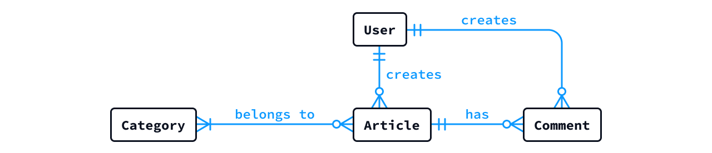
概念設計が完了したら、その成果物やシステム要件を踏まえて、採用する データモデル を選定していきます。
ここでの「データモデルの選定」とは、PostgreSQL や MySQL、MongoDB といった具体的な DBMS 製品 (実装) を選ぶことではありません。
「リレーショナルモデル (RDB)」「ドキュメント指向モデル (DocDB)」「キーバリューモデル (KVS)」など、データをどのような構造や仕組みで管理するかという基本的な方式 (モデル) を選ぶこと を意味します。
大規模なシステムなどでは「このデータは RDB で管理し、別のデータは KVS で管理する」のように、データの性質や用途に応じて複数の方式を併用することもあります。このようなアプローチを「ポリグロット永続化 (Polyglot Persistence) 」と呼びます。
- ソフトウェア開発の文脈において「ポリグロット永続化」とは何ですか。
- データベースに関する文脈で「キーバリューモデル (キーバリューストア)」とは何ですか。リレーショナルモデルと比較しての利点や弱点について、DB初学者向けに解説してください。
- データベースに関して「ドキュメント指向モデル」と「キーバリューモデル」のコンセプトや機能の違いがいまいち分かりません。両者の違いが分かるように解説してください。
2.2.1 定着確認
- データベース設計に関する文脈において、ER図の「ER」とは何の略か英語で答えよ。
- 答え: Entity Relationship
- データベース設計に関する文脈において「KVストア」の「KV」とは何の略か英語で答えよ。
- 答え: Key Value (Key-Value)
- データベースの概念設計において、管理対象となる情報やその関係を抽象的に整理・表現した成果物を、総称して何というか。
- 答え: 概念データモデル
- 概念データモデルを図として表現する代表的な方法を 2 つ挙げよ。
- 答え: 概念ER図、拡張ER図、UMLクラス図など
- データベースの「概念設計」においては、その前提としてシステムで使用するデータベースモデル
(可能であれば具体的な製品や実装まで)
を決定しておく必要がある。この説明は「適切である」か「適切ではない」かを答えよ。
- 答え: 適切ではない
- ブログシステムの概念設計のなかで「利用者と記事の関係」について検討・確認している。この段階で検討・確認すべき内容として、最も適切なものを
1 つ選び、番号で答えよ。
- 記事を保存するテーブルのカラム構成と、各カラムのデータ型を大まかに決定する。
- 1 件の記事を複数の利用者が共同で執筆できるようにするかを、関係者に確認する。
- 利用者と記事の情報を、同じテーブルに格納するか、別々のテーブルに格納するかを決定する。
- 記事を検索する SQL を記述し、必要な情報を取得できることを確認する。
- 答え: 2。業務上のルールを確認し、ER 図などで情報同士の関係を整理することが概念設計の主たる目的になります
- データベースの概念設計において「概念データモデル」と「概念ER図」はどのような関係にあるか。最も適切なものを
1 つ選び、番号で答えよ。
- 概念データモデルと概念 ER 図は同義であり、どちらも同じ図そのものを指す。
- 概念データモデルは管理すべき情報とその関係を整理したものであり、概念ER図はそれを図として表現する方法の 1 つである。
- 概念データモデルとは、概念ER図に描かれた個々のエンティティを指す。
- 答え: 2。「概念データモデル」は、管理すべき情報や情報同士の関係を抽象的に整理したもの、「概念ER図」は、そのモデルを視覚的に表現するための方法です。
- 注文管理システムの設計において、次の判断のうち「データモデルの選定」に該当するものをすべて選び、番号で答えよ。
- データを行と列からなる表で管理し、表同士を関連づける方式を採用する。
- データの管理方式は変えず、使用する DBMS を PostgreSQL から MySQL に変更する。
- 1 件の注文とその明細を、階層構造を持つドキュメントにまとめて管理する方式を採用する。
- 注文を保存するテーブルについて、注文番号や注文日のカラム名とデータ型を決定する。
- 答え: 1 と 3。2 は「具体的なDBMS製品の選定」、4 は「テーブル構造の具体的な設計」に該当
- あるシステムでは、データの性質や用途に応じて、RDB と KV
ストアを併用している。このように複数のデータ管理方式を併用するアプローチを何というか答えよ。
- 答え: ポリグロット永続化 (Polyglot Persistence)
- 🏅 データベーススペシャリスト試験 令和 5 年度秋期 午前Ⅱ 問3
2.3 論理設計
「論理設計」とは、「概念設計」で整理した情報やその関係を、データベースモデルとして採用したものに適した具体的なデータ構造へと落とし込むプロセスです。
例えば、リレーショナルモデルを採用した場合には、管理すべき情報を「テーブル」として整理し、カラムの構成や主キー、外部キーなどを定義します。このように、データベースの論理的な構造を定義する作業は「論理スキーマの設計」とも呼ばれます。
この論理設計においては、データの冗長性を減らし、データの追加・更新・削除に伴う不整合を防ぎやすくするために 正規化 (Normalization) という考え方が極めて重要となってきます。一般に、第1正規形 (1NF: First Normal Form) から 第3正規形 (3NF: Third Normal Form) までを中心に検討し、必要に応じてボイス・コッド正規形なども考慮します。
- テーブルの「正規化」については、次回の講義で詳しく解説します。
リレーショナルモデルを前提とした「論理設計」のアウトプットとしては、論理ER図 (Logical Entity Relationship Diagram) や、テーブル構造を記述した 簡略化した CREATE TABLE 文 (SQL) などが挙げられます。
ここでの「簡略化した CREATE TABLE 文」とは、インデックスや使用する RDBMS
固有の設定などを省き、テーブル名、カラム名、データ型、主キー、外部キーなどを中心に、標準SQLに沿って記述した
CREATE TABLE
文を指します。特定のRDBMSへの依存をできるだけ避け、論理的なテーブル構造を表現することを目的としています。
データベースに関する文脈で「特定の RDBMS に依存しない標準 SQL」とはどういうことですか。具体的な例を含めて解説してください。ちなみに自分は PostgreSQL で DB の勉強をしています。
「概念ER図」と「論理ER図」の違い (目的や情報粒度の違い) について、初学者向けに教えてください。
データベースに関する文脈で、単に「ER図」といった場合、概念ER図と論理ER図のどちらを指しますか。
2.3.1 定着確認
- RDB
の設計において、テーブルやカラムの構成、主キー・外部キーなどを定義し、データベースの論理的な構造を具体化する作業を何というか答えよ。
- 答え: 論理スキーマの設計
- リレーショナルモデルを前提とした論理設計で、テーブルやカラム、主キー・外部キーなどの構造を視覚的に表現した図を何というか答えよ。
- 答え: 論理ER図 (Logical Entity Relationship Diagram)
- リレーショナルデータベースの論理設計において、データ間の依存関係を考慮し、冗長性や追加・更新・削除に伴う不整合を減らすようにテーブル構造を整理することを何というか。日本語と英語で答えよ。
- 答え: 正規化、Normalization
- ブログシステムの概念設計が完了し、データモデルとしてリレーショナルモデルを採用することを決定した。後続の「論理設計」において行なう作業として、最も適切なものを
1つ選び、番号で答えよ。
- 記事の共同執筆を認めるかどうかを関係者に確認し、ビジネスルールを整理する。
- 記事の検索を高速化するためのインデックスの作成や RDBMS が使用するメモリ量、最大同時接続数を調整する。
- 利用者と記事のテーブルについて、カラム構成や主キー、外部キーを定義する。
- 記事の管理方式として、リレーショナルモデルとドキュメント指向モデルのどちらを採用するかを決定する。
- 答え: 3。1 は概念設計、2 は物理設計、4 はデータモデルの選定に該当
- 🏅 基本情報技術者試験 平成 27 年度秋期 午前 問25
- データベース設計の文脈における「ビジネスルールの確認」とはどのようなことですか。「名刺は両手で受け取る」とか「ホウレンソウを怠らない」とかの確認ですか？
- RDBMS の「最大同時接続数の設定」とはなんですか。制限することに何か意味はあるのですか。
2.4 物理設計
リレーショナルモデルを前提とした「論理設計」では、テーブルやカラム、主キー、外部キーなどの論理的な構造を定義しました。これに対して「物理設計」では、PostgreSQL や MySQL などの具体的な RDBMS や実行環境を前提として、データベースの実装方法や各種設定を決定します。
例えば、検索処理を高速化するための インデックス (
CREATE INDEX )
の設計、データ型や制約の実装方法、ストレージの構成などを検討し、処理性能やデータの格納効率を高めます。また、障害に備えた冗長化やバックアップ、負荷分散、ユーザのアクセス権限やロールなどについても、運用面を考慮して設計します。
- 物理設計の内容を具体化する際には、テーブルやインデックスなどの構造を定義する DDL (Data Definition Language) と、ユーザやロールに対するアクセス権限を設定する DCL (Data Control Language) が用いられます。
論理設計が「どのようなデータ構造にするか」を決めるのに対し、物理設計では「それを具体的な環境でどのように実現し、効率的かつ安定して運用するか」について検討・決定していきます。
物理設計については、本講義では詳しく扱いません。一般的な内容については 達人に学ぶDB設計徹底指南書 第2版 を、PostgreSQL については 内部構造から学ぶ PostgreSQL 設計・運用計画の鉄則 (改訂3版) などを参考にしてください。
2.4.1 定着確認
- データベース設計において、具体的な DBMS
製品や運用環境を前提とし、データベースの実装方法や効率的かつ安定した運用方法について検討するのは「概念設計」「論理設計」「物理設計」のうち、どの段階か答えよ。
- 答え: 物理設計
- RDB における「物理設計」に該当するものをすべて選び、番号で答えよ。
- よく実行される検索に合わせて、インデックスを設計する。
- 利用者が退会したあとも、その利用者の記事を保存するかどうかを関係者と確認する。
- 障害に備えて、ストレージの冗長化やバックアップの構成を決定する。
- 閲覧担当者と更新担当者を区別し、それぞれのアクセス権限やロールを設計する。
- 利用者と記事のテーブルについて、カラム構成や主キー・外部キーを定義する。
- 答え: 1、3、4。2 は概念設計、5 は論理設計に該当
- RDB の物理設計に関連する SQL として、テーブルやインデックスの定義に用いる命令は ( ①
)、アクセス権限の管理に用いる命令は ( ② )
に分類される。各括弧にあてはまる語を「DML」「DDL」「DCL」から選び答えよ。
- 答え: ① DDL、② DCL
- 「テーブルやキーの論理的な構造が完全に同じであれば、使用する DBMS
製品やサーバの構成が異なっても、物理設計の内容は必ず同じになる」という説明は「適切である」か「適切ではない」かを答えよ。
- 答え: 適切ではない
3 データベースの概念設計 (詳細)
データベースの「概念設計 (Conceptual Design)」では、システムが対象とする世界について どのような情報を管理し、それらがどのような関係にあるのか を明らかにして整理していきます。
具体的には、関係者へのヒアリングや資料分析などを通じて 業務要件 や ビジネスルール を確認し、対象世界 (現実世界) の情報構造を抽象化した「概念データモデル」を作成し、それを可視化表現した「概念ER図」などを作成します。
- 概念設計の段階では、テーブルやカラムなどの具体的な実装方法ではなく、管理すべき情報の全体像を整理することがポイントとなります。
中級者向け: ビジネスルールの発見も設計の仕事
現場では当たり前とされているルールほど、明文化されていないことがあります。そのため、ヒアリングでは 「例外はありませんか？」や「こういう場合はどうなりますか？」 など、具体的な状況を想定して掘り下げて確認することが求められます。
- 特に 「通常は〜」「基本的には〜」 という回答があったときには注意する必要があります。このような表現が出てきたときには、聞き流さずに「例外となるケース」についてしっかりと確認・記録するようにしてください。
すべてのビジネスルールを「データベースの制約」として実現できるわけではありません。「データベース側」ではなく「アプリ側で制御すべき制約」もあるため、個々のビジネスルールについて、どこで、どのように実現するかを検討することも必要となります。
3.1 概念ER図とは
概念ER図 (Conceptual Entity Relationship Diagram) とは、対象世界 (現実世界) の情報構造を エンティティ (Entity、実体) と、リレーションシップ (Relationship、関連) という2つの基本要素によって表現した図となります。
例えば、PG3 で開発したような「ブログシステム」を対象としたとき、設計の一例として、次のような「概念ER図」を作成することができます。
この図において、User や Article などの四角形が「エンティティ」、それらを結ぶ青色の線が「リレーションシップ」を表しています。つまり、
- 何を管理するのか 👉 エンティティ (実体)
- それらがどのような関係にあるのか 👉 リレーションシップ (関係・関連)
として、視覚的に整理・構造化されています。
なお、ER図には IE記法 (アイイー記法) や IDEF1X記法
(アイデフワンエックス記法)、Chen記法 (チェン記法)
など、様々な表現方法が存在しており、それぞれでエンティティやリレーションシップの表現に使用する記号や規則が異なっています。実際に
概念ER図 で画像検索すると、様々な記法 (亜種や独自のカスタマイズを含む)
があることが確認できると思います。
- 「概念ER図」で画像検索した結果 @ Google検索 (画像)
- 「Conceptual Entity Relationship Diagram」で画像検索した結果 @ Google検索 (画像)
実務では、IE記法 (特に Crow’s Foot記法) が広く利用されているため、本講義でも IE記法のみ を扱います。なお、ER図にはさまざまな記法があるものの、エンティティやリレーションシップ、多重度といった基本的な考え方は共通しています。
IPAの「データベーススペシャリスト試験」などでは、ER図に相当する概念データモデルが出題されます。ただし、2025年度の過去問 のように、IE記法とは異なる表記ルール が使用されることもあります。
資格試験の学習では、問題冊子に示された表記ルールを確認し、本講義で学んだ知識と対応づけて理解すること が重要となります。
以下、「概念ER図」を構成する「エンティティ」と「リレーションシップ」という要素について詳しく解説していきます。なお、ここからは「リレーションシップ」を単に「リレーション」と略表記します。
3.1.1 定着確認
- 次のような概念ER図を作成した。図のなかで「Article」や「Comment」のように四角形で示されている要素を何というか。英語で答えよ。
- 答え: Entity
- 次のような概念ER図を作成した。図のなかで四角形同士を接続している要素を何というか。英語で答えよ。
- 答え: Relationship
概念ER図における「エンティティ」と「リレーションシップ」は、それぞれ対象世界の何を表すか説明せよ。
- 答え: エンティティは、対象世界に存在する人・物・事象などのうち、情報を管理する必要がある対象を表す。リレーションシップは、それらのエンティティ間に存在する関連や結びつきを表す。
ブログシステムのデータベースに関する概念設計において、クライアントから「基本的には記事を削除したときには、その記事へのコメントも削除されるようにしてください。」と説明を受けた。ビジネスルールの例外を明らかにするため、追加で確認すべき質問例を記述せよ。
- 答え: 「基本的には、ということですが、何か例外となるケースはありますか？」「例えば、記事を削除した場合でも、トラブルへの対応や記録の保存を目的として、コメントを一定期間残しておく必要はありませんか？」
🏅 基本情報技術者試験 平成 23 年度特別 午前 問46
🏅 応用情報技術者試験 平成 22 年度秋期 午前 問62
3.2 補足: ビジネスルールから考える「概念ER図」
先ほど示したブログシステムの「概念ER図」ですが、どのような検討を経て、そのような図になったのかについて考えてみます。
例として「利用者が記事を作成し、コメントを投稿できる。また、記事をカテゴリごとに分類できる」という機能を備えたブログシステムの開発を想定します。ここから、管理すべき情報としては User (利用者)、Article (記事)、Comment (コメント)、Category (カテゴリ) というエンティティを抽出することができます。
しかし、これらのエンティティを単に線で結ぶだけでは、それらが「どのような関係にあるのか」を十分に表現することができません。実際の設計では、次のようなビジネスルールについて確認する必要があります。
- 🤔 利用者は、記事を1件も書いていなくてもよいか。
- このブログでは、記事を書いていない利用者も登録できることにします。一方、記事には必ず 1 人の執筆者が存在するものとします。
- 🤔 コメントがない記事も認めるか。
- 投稿直後の記事にはコメントがないため、コメントは 0 件でもよいことにします。一方、コメントには必ず投稿先の記事と投稿者が存在するものとします。
- 🤔 1 件の記事に複数のカテゴリを設定できるか。
- このブログでは、複数のカテゴリを設定できることにします。ただし、記事には最低 1 つのカテゴリを設定するものとします。また、記事がまだ登録されていないカテゴリが存在することも認めます。
以上のようなビジネスルールを踏まえてエンティティ同士の関係を整理し、IE記法に基づいて表現すると、次のような「概念ER図」とすることができます。
図中でのリレーションの端点記号の意味については、このあと解説していきます。
同じブログシステムであっても、ビジネスルールが異なれば「概念ER図」も変わることに注意してください。 例えば、記事の共同執筆を認めるか否か、1件の記事に複数のカテゴリを設定できるか否かといった違いによって、エンティティ同士の関係は異なり、それにより「概念ER図」のなかのリレーションの表現 (端点記号) が変わってきます。
3.3 「エンティティ」とは
RDB において「テーブル」に相当するものが エンティティ (Entity) となります。日本語では「実体」と訳されますが、必ずしも物理的な存在を意味するわけではなく、イベント (出来事) や 抽象的な概念 も「エンティティ」としてモデル化されます。
概念ER図において、エンティティは一般に「四角形」で表現されます。
例えば、ブログであれば、Article (記事)、Comment (コメント)、Category (カテゴリ)、User (ユーザ) といったものが「エンティティ」としてモデル化されます。概念設計の段階では細部までは詰めませんが、エンティティは、一般に複数の アトリビュート (属性) を持ちます。
「アトリビュート (属性) 」とは、RDB で カラム に相当するものです。例えば、Article エンティティは、title、body、created_at といったアトリビュートを持つと考えられます。
- オブジェクト指向の考え方で言えば、オブジェクトが エンティティ、プロパティが アトリビュート に相当します。
3.3.1 定着確認
- 次に示すものは、ある学校の図書館における貸出管理システムの概要を説明したものである。この説明から、データベースで管理すべきエンティティを抽出せよ。
- 答え: 学生、本、貸出、著者。※ あくまで一例であり、ほかにも妥当な設計が考えられます。
ある学校の図書館では、学生が本を借りることができます。図書館にはさまざまな本が登録されており、学生が本を借りた際には、誰がどの本を借りたのか、いつ借りたのか、いつ返却したのかを記録しています。また、本の著者についても情報を管理しています。
- 次に示すものは、ある学校の課題管理システムの概要を説明したものである。この説明から、データベースで管理すべきエンティティを抽出せよ。
- 答え: 学生、教員、授業、課題、提出物。※ あくまで一例であり、ほかにも妥当な設計が考えられます。
ある学校では、教員が授業ごとに課題を出し、学生は指定された期限までに課題を提出します。システムでは、授業の情報や課題の内容、提出期限を管理するとともに、学生が提出したファイルや提出日時、教員による評価結果なども記録しています。
3.3.2 エンティティとして扱うべきか、アトリビュートとして扱うべきかの判断
ある情報を「エンティティ」として扱うか、「アトリビュート」として扱うかは、設計目的やビジネスルール、運用上の要件によって変わるものであり、あらゆるシステムに共通する絶対的な正解があるわけではありません。とはいえ、この判断を誤ると、ビジネスロジックやデータ処理の実装が複雑になり、将来的に大きな 技術的負債 となる可能性があります。特に、運用開始後にデータ構造を変更する場合、既存データの移行やアプリケーションの修正など、多大なコストが発生することもあります。
データベース設計について、AIの提案を十分に検証せずに採用すると、設計全体に長期的な悪影響を及ぼす技術的負債が生まれる可能性があります。
エンティティとアトリビュートの区別は、システム全体の設計意図を踏まえ「何を、どのような目的で管理する必要があるのか」を考えて判断することが重要となります。
例えば、ゲームのキャラクタが持つ「ジョブ」という情報について考えてみます。キャラクタごとに
Priest や Monk といった ジョブ名を記録するだけ
であれば、Character というエンティティ (テーブル) に job
というアトリビュート (カラム) を設け、文字列として保持する方法が考えられます。
一方、ジョブごとの特性として、攻撃補正、防御補正、魔法補正、フレーバーテキストなども管理する のであれば、Job という独立したエンティティ (テーブル) を設け、ジョブ名や各補正値をアトリビュート (カラム) として管理する設計が考えられます。
この場合、Character と Job
を関連づけることで、同じジョブに属するキャラクタが共通のジョブ情報を参照できるようになります。例えば、Priest
の防御補正を変更する場合も、Job
側の情報を更新するだけで済み、各キャラクタのデータを個別に書き換える必要がなくなります。
例えば「住所」は単なる文字列の「アトリビュート」として管理できます。一方、1 人の利用者が複数の住所を登録でき、それぞれについて登録日や用途 (自宅・配送先など) を管理する必要があれば、住所を独立した「エンティティ」として扱う設計が考えられます。
また「所持金」はキャラクタの「アトリビュート」として管理できますが、入出金の履歴まで記録したいのであれば、取引履歴という別の「エンティティ」を追加する設計が考えられます。
このように、管理する情報の範囲が広がることで、新たなエンティティが必要になる場合もあります。
なお、エンティティは、細かく分割すればよいというわけではありません。過度な分割は、以降の論理設計や実装 を複雑にする可能性があります。そのため、データの整合性や保守性、実装時の性能なども見据えながら、適切な粒度でエンティティを設計することが重要です。
概念設計でアトリビュート (属性) を表現したい場合は？
工程を形式的に分ける説明では「概念設計でエンティティと関係を整理し、論理設計でアトリビュート (属性) を詳しく検討する」と区分し、概念ER図にはアトリビュート (属性) を記載しない流儀もあります。ただし、これはすべての資料や設計現場に共通する絶対的な規則ではありません。
実際には、概念設計の段階からアトリビュート (属性) を検討しても問題ありません。例えば、先ほどの Job のように「ジョブ名だけでなく、攻撃補正や防御補正なども管理したい」と考えることで、独立したエンティティとして扱う必要性に気づくこともあります。このように、設計工程を柔軟に行き来しながら、管理すべき情報やその関係を整理していくことも重要となります。
概念ER図のなかにアトリビュートを記載する場合には、例えば
Character (name, level, job) のように表現する方法があります。
また、概念ER図とは別に、次のような簡易的なドキュメントとして整理する方法もあります。
- Character
- name
- level
- job
- Guild
- name
- rankただし、アトリビュートを検討する際には、カラム名の命名規則や文字数の上限、具体的なデータ型など、実装上の細部に深入りしすぎないよう注意してください。
概念設計の本質は「管理すべき情報とその関係を明らかにし、関係者の間で共通認識を形成すること」にあります。アトリビュートもそのための手がかりとして活用できますが、データ型などの具体的な実装方法については、後続の設計工程で検討していきます。
- データベースの概念設計において、ある要素を「エンティティ」にすべきか、「アトリビュート」にすべきか、一般的な指針や考え方について様々な観点から解説してください。
3.3.3 定着確認
- 「概念ER図」におけるエンティティとは、RDB における ( ) に相当する要素である。
括弧にあてはまる適切な語を答えよ。
- 答え: テーブル
- データベース設計において、エンティティが持つ「タイトル」「作成日時」などの項目を何というか。カタカナ7文字もしくは漢字2文字で答えよ。
- 答え: アトリビュート、属性
- ある「概念ER図」において、Article は
title、body、created_at
を持つ。エンティティにあたるものと、アトリビュートにあたるものをそれぞれ答えよ。
- 答え: エンティティは Article、アトリビュートは title、body、created_at です。
- アトリビュートは複数のエンティティをまとめたものである。この説明は「適切である」か「適切ではない」かを答えよ。
- 答え: 適切ではない。エンティティが、その情報を表す項目としてアトリビュートを持ちます。
- RDB の「テーブル」と「カラム」に対応する概念設計の用語を、それぞれ答えよ。
- 答え: テーブルは「エンティティ」、カラムは「アトリビュート」に対応
3.4 リレーションとは (多重度のみの表現)
ER図における リレーション とは「エンティティ同士の関係 (関連や結びつき) を表現するもの」となります。例えば「ブログシステム」において…
- 1つの Article (記事) には 複数の Comment (コメント) を付けることができる。
- 1つの Comment (コメント) は 必ず1つの Article (記事) に属する。
…のようなエンティティ間の関係があるとき、ER図では次のように、線と Crow’s Foot (カラス足 ) などの端点記号を使ってリレーションを表現します。
ここで、リレーションの両端に付けられた記号は、一方のエンティティ1件に対して、もう一方のエンティティが何件対応するかを表しています。このようなエンティティ同士の 数量的な関係や制約 を カーディナリティ (多重度) と呼びます。そして、ER図では、この カーディナリティ (多重度) を Crow’s Foot などの記号で表現します。
例えば、下図の ❶ のような カラス足の記号 (
多 を表す記号) は、「1つの Article に、複数の Comment
を付けることができる」という数量的な関係を表しています。
一方、❷ のような 縦棒の記号 (数字の
1 を表す記号) は、「1つの Comment は、1件の Article
に属する」という数量的な関係を表しています。
このようなエンティティ同士の関係は、「Article と Comment は 1対多
(1:多、1:N) の関係にある」のように表現します。
リレーションをER図で表現するときは、一方のエンティティを1件とした場合に、相手が何件対応するかを考えます。これを両方向について確認し、それぞれの端点に対応するカーディナリティ (多重度) の記号を付けます。
- 1件の Article に、Comment は最大何件あるか。
- 複数件のコメントを付けられるので、Comment 側の端点にカラス足の記号を付けます。
- 1件の Comment は、何件の Article に属するか。
- 1件の記事に属するので、Article 側の端点に縦棒の記号を付けます。
リレーションを読み取るときは、一方のエンティティを1件に固定し、相手が何件対応するかを考え、相手側の端点に付けられた記号から読み取ります。
例えば「Article を1件に固定したら、Comment は何件対応するか」と考え、その答えを Comment 側の端点に付けられた記号から確認します。
なお、ここでは 1 と 多
の区別だけを扱っています。「0件でもよいか」「必ず1件以上の関係が必要か」といった条件については、このあとの
リレーションとは (多重度と任意性の表現)
で説明します。
別の例で考えてみます。例えば、ER図で Student (学生) と
Subject (科目) という 2
つのエンティティの関係が、次のように表現されているとします (リレーションの
両端 が 多 となっている)。
このER図は、次のような関係を表しています。
- 1人の Student は、複数の Subject を受講できる (A Student takes multiple Subjects.)。
- 1つの Subject は、複数の Student に受講される (A Subject is taken by multiple Students.)。
このような関係を 多対多 ( N:M ) の関係と表現します。
ER図の関連名 (Relationship Name) について
IE記法のER図では、エンティティ同士の関係をより分かりやすくするために、リレーションを表す線上に 関連名 (Relationship Name) を付けることがあります。
例えば、下図では Article と Comment の関係を has という英語の 動詞句
(Verb Phrase) で補足しています。これは「Article は Comment
を持つ」という関係を言葉で説明したものです。
このように、関連名はエンティティ同士の関係を自然言語で説明するための補助的な表現となります。そのため、関係が明らかな場合には省略 されることもあります。
なお、関連名は以下のように「どちらのエンティティを主語にするか」によって変わります。
- Article を主語にする場合：Article
hasComment (記事はコメントを持つ)。 - Comment を主語にする場合：Comment
belongs toArticle (コメントは記事に属する)。
この例では、Article を基準にすると has ですが、Comment を基準にすると
belongs to という表現になります。
どちらのエンティティを基準 (主語) にするかについて厳密な決まりは無く、一般には「より中心的なエンティティ」や「動作・行為を起こす側」を基準にすることが多いです。
ER図でよく使用される関連名 (動詞句) には、次のようなものがあります。
- has / belongs to
- contains / is contained in
- creates / is created by
- manages / is managed by
- owns / is owned by
- includes / is included in
- references / is referenced by
3.4.1 定着確認
- 次のER図が表すエンティティ A と B
の多重度について、正しいものをすべて選べ。なお、オプショナリティは考慮せず、カーディナリティのみを考慮するものとする。
- ❶ 1件の A に対して、複数件の B が対応することができる。
- ❷ 1件の B に対して、複数件の A が対応することができる。
- ❸ 1件の A に対して、対応する B は1件である。
- ❹ 1件の B に対して、対応する A は1件である。
- ❺ A と B は
1:多の関係にある。 - ❻ A と B は
多:多の関係にある。 - ❼ A と B は
多:1の関係にある。- 答え: ❶、❹、❺
- エンティティ A、B、C、D、E
がある。次の要件を満たすように概念ER図を作成せよ。なお、オプショナリティは考慮せず、カーディナリティのみを考慮するものとする。
- 1件の E に対応する D は1件である。
- 1件の D には、複数件の E が対応できる。
- 1件の D には、複数件の C が対応できる。
- 1件の C には、複数件の D が対応できる。
- 1件の A に対応する E は1件である。
- 1件の E に対応する A は1件である。
- 答え: 概念ER図
- 次の要件を満たすように概念ER図 (IE記法・Crow’s Foot記法で、関係名も記述)
を作成せよ。なお、オプショナリティは考慮せず、カーディナリティのみを考慮するものとする。
- 学校の授業管理システムを考える。
- エンティティは Student (学生)、Teacher (教員)、Subject (授業)、Room (教室) の 4 つとする。
- 1人の Teacher は、複数の Subject を担当する。
- 1つの Subject は、複数の Student に受講される。
- 1つの Subject は、1人の Teacher が担当する。
- 1人の Student は、複数の Subject を受講する。
- 1つの Subject は、1つの Room を利用する。
- 1つの Room は、複数の Subject で利用される。
- 答え (作成例) : 概念ER図
- 🏅 基本情報技術者試験 平成 24 年度秋期 午前 問26


3.5 リレーションとは (多重度と任意性の表現)
前のセクションでは、カーディナリティ (多重度) のみに着目してリレーションを表現しました。
しかし、実際のER図では、多重度に加えて、対応するエンティティが必ず存在するのか、それとも存在しない場合もあるのかを示す オプショナリティ (任意性) についても表現することが推奨されます。
オプショナリティは、必須 (少なくとも1件の対応が必要) を数字の
1 に似た縦棒で表し、任意 (0件でもよい) を数字の 0
に似た丸印で表します。
上図の Comment 側の端点では、多 を表すカーディナリティの記号と、0
(任意) を表すオプショナリティの記号が組み合わされています。これは、「1件の Article
に対して、0件以上の Comment が対応することができる (＝Comment が1件も付いていない Article
も存在し得る)」ことを表しています。
一方、Article 側の端点では、1 を表すカーディナリティの記号と、1
(必須) を表すオプショナリティの記号が組み合わされています。これは、「1件の Comment
は、必ず1件の Article に属する (＝どの Article
にも属さない Comment は存在し得ない)」ことを表しています。
別の見方をすると、オプショナリティはエンティティ間の対応件数の 下限 (
0 または 1 ) を、カーディナリティは 上限 (
1 または 多 ) を表しているとも言えます。
例えば、データベース設計では 1..* や 0..1
のように件数の範囲を表現することがありますが、このとき下限が
オプショナリティ、上限が カーディナリティ に対応します。
ここで、前のセクションで説明した両方向の考え方に、最小件数も加えてみましょう。
- 1件の Article に対する Comment は、最小0件、最大は複数件 (上限なし) です。この2つの条件を、Comment 側の端点に記号で表します。
- 1件の Comment に対する Article は、最小1件、最大1件です。この2つの条件を、Article 側の端点に記号で表します。
それぞれの端点では、エンティティの四角形に近い記号が最大件数、その内側 (線の中央寄り) の記号が最小件数を表します。例えば、上図の Comment 側では、四角形に近いカラス足が「多」、その内側の丸印が「0」を表しています。
任意性を検討するときは、まず片側を1件に固定し、相手が「最少何件、最大何件」かを考えます。その答えを相手側の端点に置いてから、逆方向も同じように考えると整理しやすくなります。
カーディナリティとオプショナリティを組み合わせると、Crow’s Foot 記法では、次の 4パターン の端点記号を使用することになります。
以降、試験や小テストを含め、特に指示がない限り、ER図では カーディナリティとオプショナリティの両方を考慮した表現を使用してください。
リレーションの具体的な上限数は考慮せずともよいのか？
ここまでに学んだIE記法の基本記号では、最大件数を 1 または 多
で表現します (多 は * や N
と表記することもあります)。
例えば、「1人のキャラクタは最大3つのギルドに所属できる」という条件があっても、Guild
側の最大件数は 多
と表現します。最小件数については、未所属を認めるかどうかに応じて 0 または
1 を指定します。
しかし、ER図の基本記号で区別できないことと、設計上考慮しなくてよいことは別です。「最大3件」という条件もシステムが満たすべき重要な要件であり、ER図の注記や要件定義書などに記録しておく必要があります。その条件を実際にどのように守るかは、後続のデータベース設計やアプリケーション設計で具体化します。
- PostgreSQL 18で、キャラクタとギルドの所属関係を中間テーブルで管理するとします。「1人のキャラクタが所属できるギルドは最大3つ」という条件はどのように設定できますか。
3.5.1 定着確認
- ER図の文脈において「オプショナリティ」は日本語で何と表現されるか。漢字3文字で答えよ。
- 答え: 任意性
- ER図の文脈において「カーディナリティ」は日本語で何と表現されるか。漢字3文字で答えよ。
- 答え: 多重度
- 数量の範囲表現
0..*に対応した Crow’s Foot 記法の表現は、次の図のうちどれか答えよ。- 答え: (1)
- Character (キャラクタ) とGuild (ギルド)
というエンティティを考え、次の関係を適切に表現した概念ER図を作成せよ。なお、Character
を主語とした適切な関係名/動詞句も記載すること。
- Character は Guild に所属しなくてもよいが、所属する場合は1つの Guild のみに所属する。
- Guild には少なくとも1人の Character が所属していなければ存在できない。
- 答え : 概念ER図
- Character (キャラクタ) と Item (アイテム)
というエンティティを考え、次の関係を適切に表現した概念ER図を作成せよ。なお、ここでの Item
とは、個々の所有インスタンス (実体) ではなく、アイテムの種類 (種別情報)
を表すものとする。ER図には Character を主語とした適切な関係名/動詞句も記載すること。
- Character は、0 個以上の複数の Item を持つことができる。
- Item は、0 人以上の Character に所有される。
- 答え : 概念ER図
- 次の概念ER図を、正しく説明している文章には「True」を、そうではない文章には「False」を答えよ。なお、図内の動詞句
belongs toは、いずれもエンティティ B を主語として読むものとする。A と C は「組織」、B は「人」として考えるとよい。- 1つの A には、ただ 1人 の B が所属する。答え: False
- A には、1人 の B も所属しないこともある。答え: False
- C には、0人 もしくは 1人 の B が所属する。答え: False
- 1人の B は、ただ1つの C に所属できる (所属しないことも可)。答え: True
- 1人の B は、ただ 1 つの A に所属しなければならない (複数の A に所属は不可)。答え: True


- 次に示す各説明について、最小件数 (
0または1) と最大件数 (1または多) の組み合わせに対応する概念ER図を記号で答えよ。具体的な上限数は、各説明に示した要件として保持するものとする。- (1)
各キャラクタは、特定のイベントをクリアした後、3つのうち1つのギルドを選択して所属することができる。イベントをクリアした後も、どのギルドにも所属しない選択ができる。各ギルドは運営が作成するものであり、誰もメンバがいない状態もあり得る。
- 答え: (C)
- (2)
各キャラクタは必ず1つのギルドに所属しなければならない。メンバが0名のギルドは存在し得ない。
- 答え: (A)
- (3)
各キャラクタは、必ず1つ以上のギルドに所属している必要がある。各ギルドは0名以上のメンバで構成される。
- 答え: (D)
- (4)
各キャラクタは、最大で3カ所のギルドに所属することができる。また、どのギルドにも所属しない選択もある。各ギルドは1～32名のメンバで構成される。
- 答え: (B)
- (1)
各キャラクタは、特定のイベントをクリアした後、3つのうち1つのギルドを選択して所属することができる。イベントをクリアした後も、どのギルドにも所属しない選択ができる。各ギルドは運営が作成するものであり、誰もメンバがいない状態もあり得る。
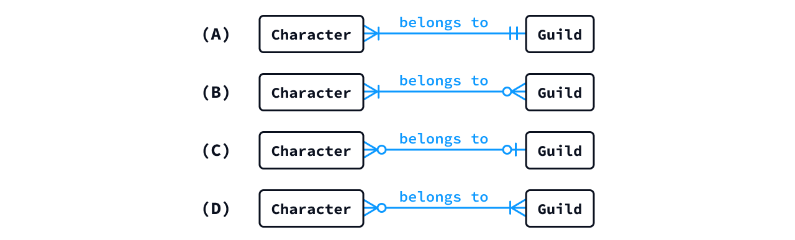
3.6 概念ER図を作成することの意義
概念ER図 (概念データモデル) を作成・共有することで、自然言語による説明では曖昧になりやすいエンティティ同士の関係 を、明示的かつ一貫した形式で表現・共有することができます。図として可視化することで、データモデルの構造や全体像を理解しやすくなり、チーム開発におけるメンバー間の認識の齟齬や、それに起因する手戻りを防ぐことにもつながります。
また、適切なツールを利用すれば、自然言語で詳細な説明を記述するよりも、効率的にER図を作成することができます。例えば、次の概念ER図が表している内容を文章で説明しようとすると…
…次のようになります。エンティティやリレーションの数が増えるほど、自然言語での説明は長くなり、内容も複雑になっていくことが分かると思います。
- 1人の User は、0件以上の Article を作成できる (Article を1件も作成していなくてもよい)。
- 1件の Article は、必ず1人の User によって作成される。
- 1件の Article には、0件以上の Comment を付けることができる (Comment が1件も付いていなくてもよい)。
- 1件の Comment は、必ず1件の Article に属する。
- 1件の Comment は、必ず1人の User によって作成される。
- 1人の User は、0件以上の Comment を作成できる (Comment を1件も作成していなくてもよい)。
- 1件の Article は、必ず1つ以上の Category に属する (どの Category にも属さないことは認められない)。
- 1つの Category には、0件以上の Article が属することができる (Article が1件も属していなくてもよい)。
このように、誤解や認識の齟齬を避けようとして条件を丁寧に記述すると、どうしても説明が冗長になりがちで、その作成や修正、確認にも手間がかかります。さらに、文章を列挙するだけでは リレーションの記述漏れ が生じやすく、エンティティ同士の関係やデータモデルの全体像を把握することも難しくなります。
こうした理由から、データベース設計では、エンティティ同士の関係を視覚的に整理・共有するためにER図が広く活用されています。
ER図は設計者だけが利用するものではなく、開発に携わるメンバーが共通認識を持つための重要な資料でもあります。そのため、ジュニアレベルのエンジニアであっても「ER図を正しく読み解く力」が求められます。
次のセクションで扱う「論理ER図」も含めて、しっかりと理解するようにしてください。
3.7 概念設計からモデル選定へ
概念設計が完了したら、次は データベースモデルの選定 を行います。ここでは、作成した概念ER図 (概念データモデル) やシステム要件を踏まえ、代表的なユースケースを具体的に想定しながら、どのデータベースモデルが適しているかを検討します。
モデルの選定では、主に次のような観点が重要になります。
- 検索・更新処理の特徴：複雑な検索や集計が必要なのか、キーを指定した単純な読み書きが中心なのか。また、更新時にどの程度のデータ整合性が求められるのか。
- データ構造の特徴：データ同士の関係が複雑なのか、データ構造 (スキーマ) が頻繁に変化するのか。また、その変更にどの程度柔軟に対応する必要があるのか。
- アクセスの頻度や性能要件：読み取りと書き込みのどちらが中心なのか。また、どの程度の応答速度やスループット (＝一定時間あたりに処理できるデータ量やリクエスト数) が求められるのか。
どのデータベースモデルが適しているかは、システムに求められる要件によって異なります。代表的なモデルと、それぞれが適しているケースを次に示します。
- リレーショナルデータベース
(RDB)：複数のデータを関連付けた検索・集計や、トランザクションによる整合性の確保を重視する場合。
- 代表的なDBMS：PostgreSQL、SQLite、MySQL、Microsoft SQL Server など
- 代表的なクラウドサービス：Supabase、Neon、Amazon RDS、Amazon Aurora、Azure SQL Database など
- ドキュメント指向データベース
(DocDB)：柔軟なデータ構造が必要で、ドキュメント単位でのデータ取得・更新が中心となる場合。
- 代表的なDBMS：MongoDB (モンゴディービー)、Couchbase (カウチベース)、Apache CouchDB など
- 代表的なクラウドサービス：MongoDB Atlas、Cloud Firestore (Firebase)、Amazon DocumentDB、Azure Cosmos DB (ドキュメントモデルでの利用) など
- キーバリューストア
(KVS)：キーを指定した単純なデータアクセスが中心で、高速な読み書きが求められる場合。
- 代表的なDBMS：Redis (レディス)、Valkey (ヴァルキー)、Memcached など
- 代表的なクラウドサービス：Upstash Redis、Redis Cloud、Amazon DynamoDB (ドキュメントモデルにも対応)、Cloudflare Workers KV、Amazon ElastiCache (エラスティキャッシュ) など
ただし、各モデルの用途は固定的なものではなく、実際には製品の特徴や複数モデルの併用も考慮して選定していきます。また、1つの製品・サービスが複数のデータモデルに対応している場合もあるため、ここで示した分類は排他的なものではありません。
本科目では、モデル選定の詳細には踏み込まず、以降は リレーショナルデータベース (RDB) を前提として設計方法を学んでいきます。モデル選定について興味がある学生は、次のようなプロンプトを使って、さらに理解を深めてみてください。
データベース設計に関する質問です。概念設計を終えた後、データベースモデルを選定するときには、どのような要件や判断基準を考慮するのでしょうか。RDB、DocDB、KVS を例に、初学者向けに解説してください。
データベース設計に関する質問です。RDB、DocDB、KVS には、それぞれどのような長所・短所がありますか。また、1つのシステムで複数のデータベースモデルを組み合わせることはあるのでしょうか。具体例を使って解説してください。
以降は、データベースとして「リレーショナルモデル」が採用されたことを前提に解説を進めます。
3.7.1 定着確認
- システム開発において「ユースケース」とは何か。最も適切なものを選び番号で答えよ。
- システム内部で使用されるデータ構造を定義したもの
- システムの画面レイアウトや操作方法をまとめたもの
- システムが現実世界でどのように使われるかを示す利用シナリオ
- 実装に用いるプログラム言語や開発環境を示したもの
- 答え: 3
- セッション情報やログイン状態など、キーを指定した単純な読み書きを高速に行いたい。代表的な用途との対応として、最も適切なデータベースモデルを「RDB」「DocDB」「KVS」から選べ。
- 答え: KVS
- トランザクションをともなうチケット予約管理システムを構築し、同時アクセスでも整合性を保ちたい。代表的な用途との対応として、最も適切なデータベースモデルを「RDB」「DocDB」「KVS」から選べ。
- 答え: RDB
- 商品データの属性が案件ごとに異なり、頻繁にスキーマ変更が発生する可能性がある。代表的な用途との対応として、最も適切なデータベースモデルを「RDB」「DocDB」「KVS」から選べ。
- 答え: DocDB
- データベースの性能要件において、一定時間あたりに処理できるデータ量やリクエスト数を表す用語をカタカナで答えよ。
- 答え: スループット
- 次の DBMS のうち、リレーショナルデータベース (RDB)
に分類されるものをすべて選び、番号で答えよ。
- PostgreSQL
- MongoDB
- SQLite
- Valkey
- 答え: 「1」と「3」。MongoDB は DocDB、Valkey は KVS に分類。
- 次のクラウドサービスのうち、リレーショナルデータベース (RDB)
を提供するものをすべて選び、番号で答えよ。
- Supabase
- MongoDB Atlas
- Redis Cloud
- Neon
- 答え: 「1」と「4」。Supabase と Neon の RDBMS は PostgreSQL を基盤としています。
- 次のクラウドサービスのうち、ドキュメント指向データベース (DocDB)
を提供するものをすべて選び、番号で答えよ。
- Cloud Firestore (Firebase)
- Amazon RDS
- Neon
- Amazon DocumentDB
- 答え: 「1」と「4」。Amazon RDS と Neon は RDB を提供。
- 次のクラウドサービスのうち、主なデータモデルがキーバリューストア (KVS)
に分類されるものをすべて選び、番号で答えよ。
- MongoDB Atlas
- Redis Cloud
- Cloudflare Workers KV
- Supabase
- 答え: 2、3。MongoDB AtlasはDocDBを、SupabaseはRDBを提供します。
- 🏅 基本情報技術者試験 平成 31 年度春期 午前 問30
4 論理設計
論理設計では、概念ER図を リレーショナルデータベース (RDB) の構造に合わせて整理し、次のような 論理ER図 (Logical Entity Relationship Diagram) を作成していきます。
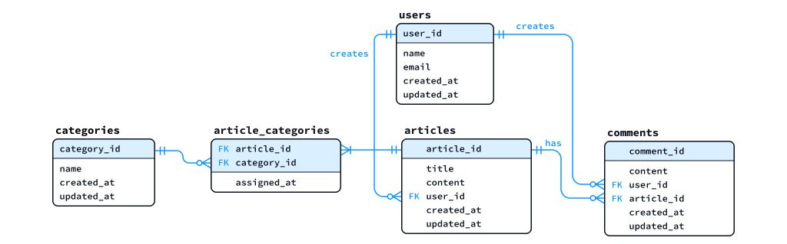
具体的には、概念ER図を 次のような方針 (＝RDBでデータを効果的・効率的に管理するための考え方 ) に沿って整理し、テーブルやカラム、キーといった RDBでの実装を意識した構造に近づけていきます。
- 各エンティティに必要なアトリビュート (属性) を整理し、テーブルとカラムを定義する。
- 階層構造や 列方向の繰り返し構造 を避け、データを2次元の表 (テーブル) として整理する。
- 各セルに格納するデータは、原則として 単一の値 (スカラー値) とし、集合や配列などを含まない構造にする。
- 各テーブルのレコード (行) を一意に識別する 主キー (Primary Key) を設定する。
多対多のリレーションは、中間テーブル (関連エンティティ) を導入して、1対多の関係に分解する。- データの重複や更新時の不整合を防ぐため、必要に応じて 正規化 (1NF → 2NF → 3NF) を行う。
なお、論理設計では RDB でのデータ管理を意識しますが、PostgreSQL や SQLite などの 個別製品に固有の仕様や制約 については、原則として扱いません。これらは、論理設計に続く物理設計で具体的に検討します。
4.0.1 定着確認
- データベースの論理設計において、エンティティは RDB における ( ① )
に相当する。また、アトリビュート (属性) は、RDB における ( ② )
に相当する。各括弧にあてはまるもっとも適切な語をカタカナで答えよ。
- 答え : ①テーブル。②カラム
- テーブルの各セルに格納する、集合や配列ではない単一の値を ( )
という。括弧にあてはまる語を答えよ。
- 答え: スカラー値 (スカラ値)
- テーブルのレコード (行) を一意に識別するために設定するキーを、日本語と英語で答えよ。
- 答え: 主キー。Primary Key
- RDBの論理設計では、「多対多」のリレーションを、そのまま 2
つのテーブル間に定義するのではなく、( )
を導入して「1対多」の関係に分解する。括弧にあてはまる語を答えよ。
- 答え: 中間テーブル または 関連エンティティ
- データの重複や更新時の不整合を防ぐため、1NF、2NF、3NFなどの段階に沿ってテーブルの構造を整理することを何というか答えよ。
- 答え: 正規化
4.1 テーブルとカラムの設計
論理設計では、概念ER図の「エンティティ」を RDB の テーブル に対応づけ、また「アトリビュート (属性)」を RDB の カラム に対応づけて情報を整理し、それに基づいて「論理ER図」を作成していきます。
4.1.1 「概念ER図」と「論理ER図」の対応
以下に「概念ER図」と「論理ER図」の一例を示します。2 つの図を見比べて、それぞれの要素がどのように対応しているか、また 論理ER図ではどのような要素が新たに追加されているかを読み解いてください。
概念ER図の例
論理ER図の例
論理設計は、RDB での実装を意識した設計工程であるため、実務では「エンティティ」や「アトリビュート」よりも、「テーブル」や「カラム」 という呼称が使われることがあります。厳密には「論理モデル」と「実際のテーブル構造」は区別されますが、本講義では実務での分かりやすさを優先し、「テーブル」と「カラム」という呼称を用います。
4.1.2 テーブルとカラムの洗い出し
論理設計では、まず「概念ER図」に表現されたエンティティを「テーブル」として捉え、それぞれの カラム構成を検討していきます。
本講義では一般的な RDB の命名慣習に合わせ、テーブル名は 可算名詞の複数形 (集合名詞はそのまま) のスネークケース、カラム名は「単数形のスネークケース」で統一します。
各カラムのデータ型については、文字列型、数値型、日時型といった
大まかな分類で検討しておきます (
VARCHAR(16)、INTEGER、TIMESTAMP
など、具体的なデータ型の決定は「物理設計」において行います)。
以下は、「概念ER図」からテーブルとカラムを洗い出して整理した例です (整理方法に決まった書式があるわけではありません)。
- `users` テーブル (User エンティティ)
- `name` 文字列型
- `email` 文字列型
- `created_at` 日時型
- `updated_at` 日時型
- `articles` テーブル (Article エンティティ)
- `title` 文字列型
- `content` 文字列型
- `created_at` 日時型
- `updated_at` 日時型
(以下、略)ここで、各テーブルのカラムは、基本的に スカラー値、つまり 配列やオブジェクトのような内部構造を持たない単一の値 を格納するように設計します。
例えば、position というカラムに [10, 20] のような
配列 を格納したり、class というカラムに
{"grade": 4, "course": "I"} のような 辞書 (オブジェクト)
を格納したりするのではなく、次のように個々の値を独立したカラムとして定義します。
- position は、
pos_xとpos_yに分け、それぞれにスカラー値 (数値) を格納する。 - class は、
gradeとcourseに分け、それぞれにスカラー値 (数値、文字列) を格納する。
このように、1つのカラムに複数の情報をまとめて格納することを避け、各カラムが単一の値を持つ構造に整理することが、次回講義で扱う 第1正規形 (1NF) の基本的な考え方となります。
- RDB の設計に関する質問です。キャラクターの位置情報を管理するために、あるテーブルの
positionカラムに[10, 20]のような配列を格納しようと考えました。PostgreSQL には配列型が用意されているので、このような設計も技術的には可能だとおもったのですが、別の人からは「pos_xとpos_yのようにカラムを分けたほうがよい」と助言されました。配列型を利用する設計と、カラムを分ける設計には、それぞれどのようなメリット・デメリットがあるのでしょうか。特に、データの検索・更新、制約の設定、インデックスの利用という観点から解説してください。
4.1.3 定着確認
- チームやプロジェクトで命名ルールが決まっていない場合、RDB
のテーブル名には「パスカルケース」「キャメルケース」「スネークケース」「ケバブケース」のうち、どの命名規則に従うことが最も一般的か答えよ。
- 答え: スネークケース
- RDB のテーブル名は、一般に ( ) を用いることが推奨される。 ( )
にあてはまる適切な語を答えよ。
- 答え: 可算名詞の複数形 または 集合名詞
- RDB のカラム名は、一般に ( ) を用いることが推奨される。 ( )
にあてはまる適切な語を答えよ。
- 答え: 単数形の名詞
4.2 繰り返しカラムは別テーブルで管理
テーブル内に 同種の情報を繰り返し格納するカラム構成 がある場合は、その部分を別テーブルに分離し、リレーションによって関連付けることを検討します。
例えば、characters テーブルに、次のような skill_1、skill_2、skill_3、skill_4 といったカラムを持たせる設計は、RDB における典型的なアンチパターン の1つです。
| name | job | skill_1 | skill_2 | skill_3 | skill_4 |
|---|---|---|---|---|---|
| Alice | Priest | Heal | Resurrection | NULL | NULL |
| Bob | Monk | DragonKick | NULL | NULL | NULL |
- 🚨 アンチパターン とは、一般に問題が生じやすいと知られている設計や実装の典型例を指します。
このような構造では、習得できるスキルの上限数が増えるたびにカラムを追加する必要があるほか、スキルの検索や集計が複雑になるといった問題があります。
例えば「Heal を持つキャラクタ」を検索する場合、次のように WHERE
句で複数のカラムを指定する必要があり、SQLが煩雑になります。
そこで、繰り返し出現する情報を別テーブル (ここでは skills テーブル) に分離し、同種の情報を行として縦方向に保持する構造 (＝「縦持ち」「行持ち」「long format」) に変更します。
▼ 分離後の characters テーブル
| name | job |
|---|---|
| Alice | Priest |
| Bob | Monk |
▼ 分離後の skills テーブル
| character_name | skill | slot_no |
|---|---|---|
| Alice | Heal | 1 |
| Alice | Resurrection | 2 |
| Bob | DragonKick | 1 |
このようにテーブルを分離すると、「概念ER図」は次のようになります。
ここでは、キャラクタとスキルの対応関係を名前によって示し、繰り返しカラムを別テーブルの行として管理すること に着目しています。なお、同じ名前のキャラクタをどのように区別するか、各レコードをどのように識別・関連付けるかについては、以下の「主キー」「複合主キー」「外部キー」のセクションのなかで解決していきます。これらのキーを設定した「論理ER図」についても、外部キーの説明後に改めて示します。
また、こうしたテーブル構造の整理は、次回講義で詳しく扱う 正規化 とも大きく関係してきます。
4.3 主キー (Primary Key)
テーブルを構成するカラムを整理したら、次に各テーブルの「主キー (PK: Primary Key)」を決めていきます。
「主キー」とは、テーブル内の各レコード (行) を 一意に識別できるカラム (またはカラムの組み合わせ) に設定するもの です。また、「主キー」はレコードを識別するだけでなく、他のテーブルから参照する際にも使われ、その値が 外部キー (FK: Foreign Key) として利用されることがあります。
- 「一意に識別できる」とは、複数のレコード (行) のなかから、特定の 1 行を重複なく識別できる という意味です。
- RDB では、原則として各テーブルに「主キー」を設定します。
- ログの記録やイベントの収集など、用途によっては主キーを設けない場合もあります。
- PostgreSQL では主キーのないテーブルも作成できますが、本講義の論理設計では、原則として各テーブルに主キーを定義します。
例えば、次のようなテーブルがあるとします。name、nickname、age
のうち、どのカラムを主キーとして設定できるかを考えていきます。
| name | nickname | age |
|---|---|---|
| Alice | Ali | 20 |
| Bob | Bobby | 25 |
| Carol | NULL | 20 |
| David | Dave | 23 |
4.3.1 ageカラムを主キーにできるか?
age カラムには、同じ値 (20)
を持つレコードが複数存在するため、各レコードを一意に識別できません。また、今後も同じ年齢のレコードが追加される可能性があるため、age
は主キーとして適していません。
4.3.2 nicknameカラムを主キーにできるか?
nickname
カラムには重複する値がないため、現在のデータだけを見れば、レコードを一意に識別できそうです。しかし、Carol
の nickname には NULL が設定されています。主キーには NULL を含むことができないという制約
があるため、現在の nickname
カラムをそのまま主キーにすることはできません。
4.3.3 nameカラムを主キーにできるか?
name カラムには NULL
や重複する値がなく、現在のデータだけを見れば、各レコードを一意に識別できるため、理論上は
name を主キーにすることができます。
ただし、これはあくまで 現在のサンプルデータに重複がない という状況における判断にすぎません。主キーを決める際には、今後データが増えても、一意に識別できるか まで考える必要があります。
例えば、name を主キーに設定すると、主キーには一意性が保証されるため (＝RDBMSにより、自動で「UNIQUE制約」が付与されるため)、同じ名前を持つ別人を登録できなくなるという運用上の制約 が生じます。実際には同姓同名の人物が存在することは十分にあるため、name を主キーにすることは適切ではありません。
- UNIQUE制約 とは、一意性制約 とも呼ばれ、指定したカラム（またはカラムの組み合わせ）において重複する値の登録を制限するための制約です。
- 主キーに設定されたカラムには、UNIQUE制約に加えて、NOT NULL制約 (非NULL制約) も自動的に適用されます。
このような問題を避けるため、id や character_id のような「識別用のカラム」を追加し、連番や UUID などを割り当てて主キーとする方法が広く用いられています。このような、データを識別するために人工的に設けるキーを「サロゲートキー (代理キー、Surrogate Key) 」と呼びます。
サロゲートキー (整数の連番) を追加した例を以下に示します。
| id | name | nickname | age |
|---|---|---|---|
| 1 | Alice | Ali | 20 |
| 2 | Bob | Bobby | 25 |
| 3 | Carol | NULL | 20 |
| 4 | David | Dave | 23 |
一方、「学籍番号」のように、現実世界で意味を持ち、レコードを一意に識別するために利用できるキー を ナチュラルキー (自然キー、Natural Key) と呼びます。メールアドレスなども、一意性が保証される設計であれば「ナチュラルキー」の候補となります。
サロゲートキーには「連番」と「UUID」のどちらを使うべきか
サロゲートキーには、整数の連番や、UUID、Nano ID などの識別子が利用されます。
- 連番ID は、データサイズが小さく、検索・結合やインデックスの管理において性能面で有利です。一方、ID が予測されやすく、分散環境では 一意性を保証するための仕組みが必要 になります。
- UUID v4 や Nano ID などのランダムID は、分散環境でも独立して生成しやすく、衝突する確率が極めて低い という特徴があります。また、IDの推測や列挙が困難になる一方、連番 ID よりデータサイズが大きく、インデックスの効率で不利になる場合があります。
なお、UUID には、ランダム性と時系列順の並びやすさを組み合わせた UUID v7 などもあり、連番IDとランダム ID の欠点を補う選択肢として利用されています。
- RDB のサロゲートキーとして、連番ID、UUID v4、UUID v7、Nano ID を比較してください。特に、分散環境での生成、インデックス効率、セキュリティの観点から解説してください。
- ウェブアプリのバックエンドとして使用する RDB において整数値の連番 ID をサロゲートキーとして使用するときのリスクについて解説してください。
4.3.4 定着確認
- RDB において「主キー」を表すアルファベット2文字を大文字で答えよ。
- 答え: PK
- RDB において「主キー」の英語表記 (略語ではない) を答えよ。
- 答え: Primary Key
- RDB
において、NULLを許容しているカラムを「主キー」に設定することはできない。この説明は「適切である」か「適切ではない」かを答えよ。
- 答え: 適切である
- RDB
において学籍番号やメールアドレスのように、現実世界で意味を持ち、さらにデータを一意に識別可能なカラムを主キーにした場合、それはサロゲートキーと呼ばれる。この説明は「適切である」か「適切ではない」かを答えよ。
- 答え: 適切ではない
- RDB において主キーに設定したカラムには、自動的に NOT NULL 制約と ( )
制約が適用される。括弧にあてはまる語を大文字の英語で答えよ。
- 答え: UNIQUE
- UNIQUE制約 を日本語で表記すると ( ) 制約となる。括弧にあてはまる語を漢字で答えよ。
- 答え: 一意性
- テーブルのレコードを「主キーの値によって一意に識別できる」とは、どのようなことか説明せよ。
- 答え: 登録されている主キーの値を指定すれば、複数のレコードの中から、該当する1件を他のレコードと区別して特定できるということです。
- characters テーブルは、順に
character_id、name、age
の3カラムを持ち、character_id を主キーとしている。name と
age は重複する値や
NULLを許容し、ほかに制約はない。現在のレコードが(1, Alice, 20)と(2, Bob, 25)のとき、既存のデータを変更せず、それぞれ単独で追加できるレコードをすべて選び、番号で答えよ。(3, Alice, 20)(2, Carol, 21)(NULL, Ellen, 22)(4, NULL, 23)- 答え: 「1」と「4」。「2」は主キーの値が既存のレコードと重複し、「3」は主キーがNULLなので追加できません。nameとageには主キーの制約は適用されず、この問題では重複する値やNULLも許容しています。
- 利用者情報の name カラムには、現在のところ重複する値や
NULLがない。今後は同姓同名の別人も登録する予定である。このとき、現在のデータに重複がないことを理由に name を主キーとする設計は適切か。理由とともに答えよ。- 答え: 適切ではありません。現在のデータは一意に識別できますが、nameを主キーにすると、今後、同姓同名の別人を登録できなくなるためです。
- 学生情報を管理するため、学校が学生を識別する目的で付与する、一意な
学籍番号 を主キーとして利用する案と、このデータベースでの識別用に新たに設ける
連番ID
を主キーとする案を考えている。それぞれのキーを「ナチュラルキー」「サロゲートキー」のどちらに分類するか答えよ。
- 答え: 学籍番号はナチュラルキー、識別用に新たに設ける連番IDはサロゲートキーです。値が数字かどうかではなく、そのキーが業務上の意味を持つか、データベースでの識別用に人工的に設けたものかで区別します。
- 「サロゲートキーには、整数の連番しか使用できない」という説明は「適切である」か「適切ではない」かを答えよ。
- 答え: 適切ではありません。連番のほか、UUIDやNano IDなども使用できます。
- 🏅 基本情報技術者試験 平成 25 年度秋期 午前 問30
4.4 複合主キー
テーブルの主キーは、1つのカラムだけでなく、複数のカラムを組み合わせて設定することもできます。このような主キーを、特に
複合主キー (Composite Primary Key)
といいます。複合主キーは、多対多 のリレーションを 1対多
に変換するために設ける 中間テーブル (詳細は後述) などで頻繁に使われます。
複合主キーは、主キーであることが文脈から明らかな場合、単に「複合キー」と呼ばれることもあります。
たとえば、キャラクタが所持しているアイテムの数量を管理するケースを考えます。
まず、items テーブルでは「回復薬」「剣」「盾」などの アイテムの種類 を管理するものとします。同じ種類の回復薬が 10 個あっても、10 行のデータを登録するのではなく、「回復薬」という種類を 1 行で表すものとします。
そのうえで character_items というテーブルで、どのキャラクタが、どの種類のアイテムを、何個所持しているか を管理するものとします。ここでは個々のアイテムや過去の所持履歴は扱わず、現在の所持数だけを記録します。
ただ、この character_items テーブルでは、item_id
だけでは所持しているキャラクタを区別できず、character_id
だけではアイテムの種類を区別できないという問題があります。しかし、character_id
と item_id を組み合わせれば、各行を一意に識別可能です。
そこで、この 2 つのカラムを複合主キーに設定します。
| character_id | item_id | quantity |
|---|---|---|
| 1 | 38 | 3 |
| 1 | 46 | 1 |
| 2 | 10 | 5 |
| 2 | 11 | 2 |
| 2 | 46 | 1 |
複合主キーには、カラムの組み合わせが重複しないことを保証する役割があります。そのため、同じキャラクタと同じアイテムの種類について、現在の所持数量を複数行に重複登録することを防ぐことができます。例えば、(character_id,item_id,quantity)=(1,38,3)
と (1,38,4) は同じ組み合わせなので、両方を登録することはできません。所持数が 3
個から 4 個に変わった場合は、新しい行を追加するのではなく、既存の行の
quantity を更新します。
なお、複合主キーを構成するカラムには、一意性を保証する仕組みに加えて、NOT NULL制約 が自動的に適用されます。
中級者向け： 複合主キー vs. サロゲートキー
中間テーブルの主キー設計、つまり「複合主キーとすべきか」あるいは「サロゲートキーを導入すべきか」は、設計者によって意見が分かれるテーマとなっています。どちらにも一貫した理論的正当性があり、現在のところ明確な定石はありません。興味があれば、複合主キー アンチパターン
などのキーワードで検索したり、生成AIで深掘りしてみてください。
- RDB の設計に関する質問です。中間テーブルの主キーについて、複合主キーを採用すべきか、サロゲートキーを導入すべきかは、しばしば議論になると聞きました。それぞれの立場の主張や、その根拠について詳しく解説してください。
4.4.1 定着確認
- あるテーブルにおいて article_id カラムと category_id
カラムが複合主キーとして設定されている。このとき、article_id カラムには
UNIQUE制約 が自動的に適用されるので、article_id
カラムに同じ値を持つレコードは存在し得ない。この説明は「適切である」か「適切ではない」かを答えよ。
- 答え: 適切ではない
- RDB において、複数のカラムを組み合わせて設定する主キーを何というか。日本語で答えよ。
- 答え: 複合主キー
- 🏅 データベーススペシャリスト試験 令和 5 年度秋期 午前Ⅱ 問5
4.5 論理ER図における主キーの表記
論理ER図において、主キー (PK)
となるカラムを示す表記には、いくつかの方法があります。代表的なものとしては、❶
カラムに下線を引く、❷ id (PK)
のように明示する、あるいは ❸ 四角形の上部を区切って配置する
などがあります。
本講義資料では、上図の右端のように四角形の上部を区切ってPKカラムを配置する表記を主に使用します。
4.6 外部キーを使用した「1対多」のリレーションの表現
「概念ER図」における 1対多 のリレーションは、「論理ER図」では、1
側のテーブルの 主キー (PK) を参照する「外部キー (FK: Foreign
Key)」を、多 側のテーブルに設けることで表現します。
例えば、ブログシステムの「概念ER図」では、以下のように「User
エンティティ」と「Comment エンティティ」が 1対多
の関係になっています。これは、1 人のユーザーが 0
個以上のコメントを作成できる という関係を表しています。
この関係を「論理ER図」で表す場合は、以下の図のように、comments テーブルに
users テーブルの 主キー (user_id)
を参照するカラムを追加します。このようなカラムを「外部キー
(FK)」と呼び、論理ER図では FK という略称で表記します
(外部キーは、主キー以外の一意性が保証されたカラムを参照する場合もあります)。
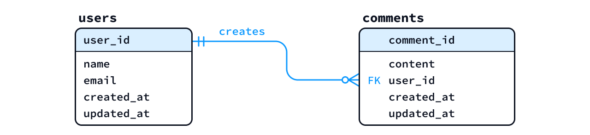
論理ER図では、以下のようにカラム名の後ろに (FK)
を付け、user_id (FK) のように表記することもあります。
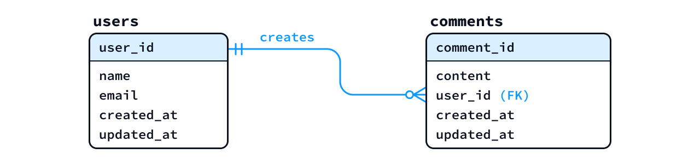
このように設計することで、テーブル間の対応関係が明確になり、SQL の JOIN
を使って関連するデータを結合して取得できます。
言い換えれば、他のテーブルの一意性が保証されたカラム (主に「主キー」) を参照するカラム のことを「外部キー」とも呼びます。
なお、リレーションの線は、テーブルを表す四角形の枠につなぐ方法のほか、上図のように 対応する「主キー」と「外部キー」を直接結ぶ方法 もあります。後者は、どのカラム間に参照関係があるのかを直感的に理解しやすいという特徴があります。
4.6.1 スキルの例に戻ってキーを決める
「繰り返しカラムは別テーブルで管理」で分離した、キャラクタとスキルの例に戻ります。今度は、同名のキャラクタも登録できること、同じキャラクタの同じスキル枠には1つのスキルを登録することを要件として、キーを決めます。
▼ characters テーブル (下線は主キー)
| character_id | name | job |
|---|---|---|
| 1 | Alice | Priest |
| 2 | Bob | Monk |
| 3 | Alice | Priest |
▼ skills テーブル (下線の2カラムを組み合わせて主キー)
| character_id | slot_no | skill |
|---|---|---|
| 1 | 1 | Heal |
| 1 | 2 | Resurrection |
| 2 | 1 | DragonKick |
| 3 | 1 | Heal |
characters は character_id を主キーにします。名前が同じ Alice
でも、ID が 1 と 3
なら別のキャラクタとして区別できます。skills では名前ではなく、その ID
を保持することで、どちらの Alice のスキルかが分かります。この
skills.character_id が、characters
を参照する外部キーです。
一方、skills は同じキャラクタに複数行があるので、character_id
だけでは行を識別できません。slot_no だけでも、Alice と Bob
がどちらも1番の枠を持つため識別できません。そこで、(character_id, slot_no)
を複合主キーにします。これなら、Alice の1番の枠に Heal、2番の枠に Resurrection
を保存でき、Bob にも1番の枠を設定できます。
重複できないのは「キャラクタの ID と枠番号の組み合わせ」です。同じキャラクタでも枠番号が違えば別の行になり、別のキャラクタなら同じ枠番号を使用できます。
キーまで決めた論理ER図は、次のようになります。skills
の上部の区画にある2カラムが複合主キーで、そのうち character_id
は外部キーでもあります。キャラクタはスキル未登録でも保存できるので、characters
の1件に対して skills は 0件以上、skills の1件は
必ず1件 の characters に属します。
4.6.2 定着確認
RDB において、値として「他のテーブルの一意性が保証されたカラムの値」をとるカラムのことを ( ) という。括弧にあてはまる最も適切な語を答えよ。
- 答え: 外部キー。Foreign Key
テーブル B は、テーブル A の主キーを参照する外部キーを持っている。このとき、テーブル A を基準としたテーブル B との関係として考えられるのは
1対1もしくは（ ）である。括弧にあてはまる語として最も適切なものは1対多、多対1、多対多のうちどれか答えよ。- 答え: 1対多
RDB において「外部キー」を表すアルファベット2文字を大文字で答えよ。
- 答え: FK
RDB において「外部キー」の英語表記 (略語ではない) を答えよ。
- 答え: Foreign Key
次の概念ER図で、Character「Alice」がどの Guild にも所属していない状態を表せるか答えよ。また、Character 1件に対する Guild の最少件数と最大件数を答えよ。
Character の名前 所属する Guild Alice なし - 答え: 表せます。Guild 側の端点は最少0件、最大1件なので、Guild 未所属の Character も表せます。
4.6.3 定着確認
次に示すような characters テーブルと、jobs テーブルから構成される RDB が存在する。各テーブルにおいて主キーとなるカラムは 下線 で示している。 ▼ characters テーブル
| character_id | name | job_id |
|---|---|---|
| 1 | Alice | J5 |
| 2 | Bob | J2 |
| 3 | Charlie | J6 |
| 4 | Ellen | J6 |
▼ jobs テーブル
| job_id | name |
|---|---|
| J1 | Fighter |
| J2 | Monk |
| J3 | Ninja |
| J4 | Samurai |
| J5 | Priest |
| J6 | Wizard |
以下の各問いに答えよ。
- characters の job_id カラムは、jobs
テーブルの主キーを参照し、その値を保持している。このようなカラムを ( )
という。括弧にあてはまる最も適切な語を答えよ。
- 答え: 外部キー
- characters テーブルからみた jobs
テーブルとのリレーションとして、最も適切なものは
1対1、1対多、多対1、多対多のうちどれか答えよ。- 答え: 多対1
- 論理ER図を作成せよ。ただし、characters テーブルの job_id
カラムには NOT NULL 制約 があると仮定すること。
- 答え: 作成例
- 論理ER図を作成せよ。ただし、characters テーブルの job_id
カラムは
NULLも許容されると仮定すること。- 答え: 作成例


4.6.4 練習1
次に示す「概念ER図」に基づいて、User、Character、Guild、Job エンティティに直接関係する範囲の「論理ER図」を作成せよ (Item および GuildStorage エンティティは対象としなくてよい)。
なお、論理ER図のテーブルとカラムの名前は英語で適切に設定すること (必要に応じて生成AIを活用すること)。また、各エンティティには、少なくとも次のアトリビュート (属性) を持たせること。
- Userエンティティ: ID、電子メール、姓、名
- Characterエンティティ: ID、名前、レベル
- Guildエンティティ: ID、名前、参加ポリシー
- Jobエンティティ: ID、名前、攻撃補正、防御補正、魔法補正
- 答え (作成例) : 部分的な論理ER図

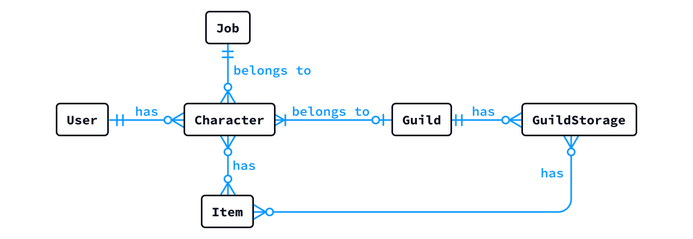
- RDB の DB 設計をしています。テーブルのカラム名 (英語・スネークケース)
を検討する手伝いをしてください。MMORPG の世界観において、
jobsテーブルのカラム (属性) として「攻撃補正」「防御補正」「魔法補正」の命名案を複数提案してください。
4.7 多対多のリレーションの分割 (中間テーブル化)
RDB では、2 つのテーブル間の 多対多 となる関係を 直接的に定義すること
ができません。そのため、両者の対応関係を管理する「中間テーブル
(関連エンティティ) 」というものを作成して、1対多 と
多対1 の関係に分解して扱います。
たとえば、ブログシステムにおいて、Article エンティティと
Category エンティティは 多対多 の関係にあります。つまり、1
つの記事は「1 つ以上の複数のカテゴリ」に属することができ、同時に、1
つのカテゴリは「0 個以上 の複数の記事」を持つことができるという 多対多
の関係となります。
この 多対多 の関係は、「概念ER図」では以下のように表現しました。
- リレーションの両端の記号が「0 個以上」と「1 つ以上」で使い分けられている点に注意してください。
これを「論理ER図」に落とし込む際には article_categories
という「中間テーブル」を作成して、次のように 1対多 と 多対1
の関係に分解します。実際の RDB
でも、この構造に従ってテーブルを作成します。なお、中間テーブルの名前は任意に設定できますが、一般には
スネークケースで両側のエンティティ名を組み合わせた名前
がよく使われます。
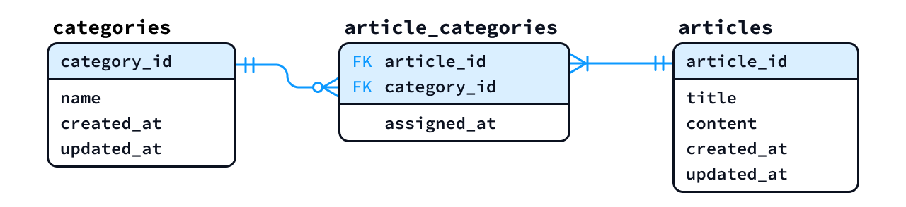
中間テーブルは、2 つのエンティティの対応関係を管理するとともに、その関係に付随する情報 (＝その組み合わせに固有の情報) も記録する役割を持ちます。例えば article_categories.assigned_at は、「その記事を、そのカテゴリに分類した日時」を表します。この日時は、記事そのものやカテゴリそのものの情報ではなく、特定の記事とカテゴリの組み合わせに対する情報 という位置づけになります。
ゲームにおける character_items.quantity (所持数) も同じ考え方です。例えば、Alice が回復薬を 3 個、Bob が回復薬を 5 個所持している場合、同じ種類のアイテムでもキャラクタによって所持数は異なります。また、Alice が所持するアイテムであっても、その種類によって所持数は異なります。
つまり、quantity
はキャラクタだけでもアイテムの種類だけでも決まるものではなく、両者の組み合わせによって決まる情報であるため、それは両者の対応関係を管理する中間テーブル
character_items に記録するという考え方になります。
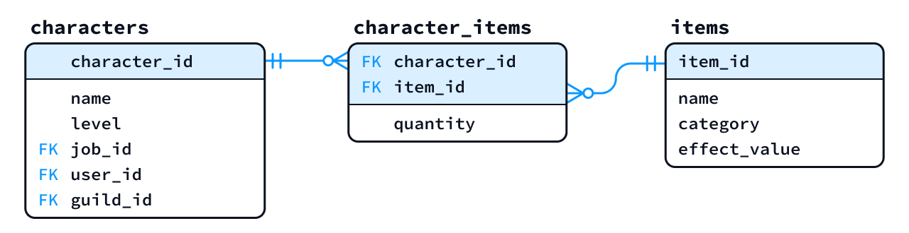
4.7.1 定着確認
RDB の設計において「多対多」のリレーションを、テーブル間に直接定義することはできない。そのため、両テーブルの間に ( ) を作成し、これを介して「1対多」と「多対1」のリレーションに分割して設計する。括弧にあてはまる語を答えよ。
- 答え : 中間テーブル または 関連エンティティ
RDB において
多対多の関係を分割するために設ける「中間テーブル」は、エンティティとして捉えると何と呼ばれるか。「エンティティ」を含む日本語で答えよ。- 答え: 関連エンティティ
students テーブル と courses テーブル は
多対多の関係にある。この対応関係を管理する中間テーブルに、適切な名前を付けよ。ただし、テーブル名はスネークケースとすること。- 答え: student_courses、course_students、enrollments など
次の論理ER図では、characters と items の主キーはそれぞれ character_id、item_id である。また、character_items の主キーは (character_id, item_id) で、各カラムはそれぞれのテーブルを参照する外部キーでもある。items の 1 行はアイテムの種類、character_items の 1 行はキャラクタとアイテムの種類ごとの現在の「所持数量」を表す。表の 2 行を character_items に同時に「登録できる」か「登録できない」か、理由とともに答えよ。
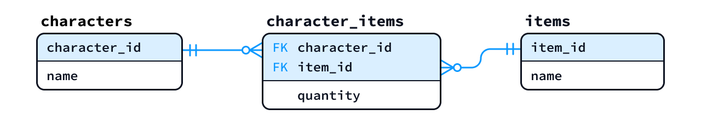
character_id item_id quantity 1 38 3 1 38 4 charactersには ID が1の Alice、itemsには ID が38の回復薬が登録されているものとする。- 答え: 登録できない。複合主キー (character_id, item_id) の値がどちらも (1,38) で重複するため。この設計では、同じ組み合わせの現在の所持数量は 1 行で管理するようになっている。
🏅 応用情報技術者試験 令和 5 年度春期 午前 問29
🏅 データベーススペシャリスト試験 令和 2 年度秋期 午前Ⅱ 問6
4.7.2 練習2
(前セクションの 練習1 のつづきとして) 次に示す「概念ER図」を参考に「論理ER図」を作成せよ。各エンティティは、少なくとも次のアトリビュート (属性) を持たせること。
- Itemエンティティ: ID、名前、種別 (整数値)、効果量 (整数値)
- GuildStorageエンティティ: ID、番号、サイズ
多対多の関係は、中間テーブルを用いて1対多、多対1に落とし込む必要がある点に注意すること- 答え (作成例) : 論理ER図

5 課題1
- 内容 : 後述の指示に従い、任意のツールを使用してER図を作成し、指定の Word ファイルに貼り付け、PDFに変換せずに提出してください。
- 提出期限 : 11月19日 (木) 23時
- 課題の採点後は、修正版の再提出や追提出があっても原則として再評価はしません。
- 担当教員に事前相談することなく、提出期限から168時間（＝1週間・7日間）を超過して提出されたもの（再提出を含む）は、未提出と同じ 0 点評価とします。
- Teams でファイルをアップロード後、「提出」ボタンの押下忘れに注意してください。
- 採点 : 15点
を標準として、20点満点で評価 します。
- 本科目では、本課題を含めて「2件」の課題を出題する予定です。
- 総合成績において課題は 20% に相当します。
- 提出先 :
Teamsの「DB-課題1」にWordファイルを提出 👉📄雛形ファイル
- 🚨PDFに変換せずに、Wordファイルのまま提出してください。
- 作成例 (細かな注意事項が記載されているので必ず確認すること) を参考にして、4 頁以内に収めてください。
- ファイル名は
課題1_NN-フルネーム.docxとしてください。NNにはゼロ埋め半角で出席番号、フルネームは姓と名にスペースを入れない漢字氏名としてください。ファイルネームのミスは4点減します。- Teams の仕様上、課題を再提出するとファイル名の末尾に番号が自動的に付きますが、その番号は気にする必要はありません (減点されません)。
- 提出された課題は、クラスの学生に共有します。
本課題では、ER図を作成するツールの選定、操作方法の習得、図の作成・出力までを学習内容とします。分からない操作は、自分で調べ、試しながら習得してください。図の正確さに加え、文字の大きさやテーブルの配置、線の接続・重なりにも配慮し、他の人が迷わず読み取れる図に仕上げてください。Word への貼り付け後も、文字や記号が明瞭に読めることを確認してください。
- 本講義資料のER図は Figma を使用して作成しています。
5.1 提出ファイル作成に関する注意事項
雛形の Word ファイル は、ダウンロードして、必ず デスクトップアプリ版の Word を使って編集 してください。
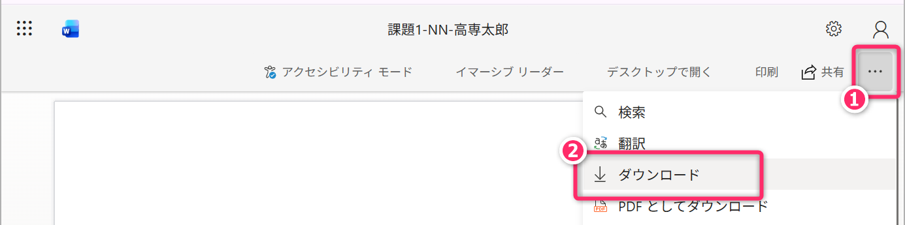
ブラウザ版 (Word for the Web) や Teams版 で閲覧・編集すると、体裁や設定が崩れることがあります（減点対象）。ブラウザで開いてしまった場合は、次の手順でデスクトップアプリで開き直してください。
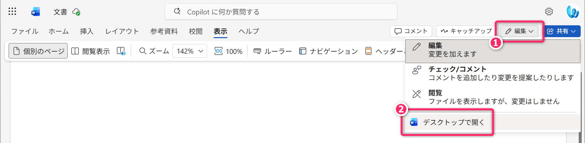
Word のオプションから「画像が自動圧縮されない設定になっていること」を確認してください。
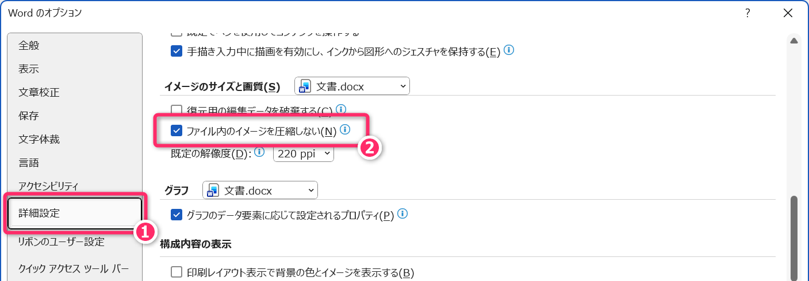
- 🚨 ER図をラスタ形式 (PNG など) で貼り付ける場合は、印刷時の出力解像度が 300dpi 以上 となるようにしてください。A4 用紙に貼り付けた際の実寸が 約16cm (≒6.3インチ) であれば、6.3 inch × 300 dpi = 1,890 px となるため、図の横幅は少なくとも 1,890 ピクセル以上 としてください。
- 🚨 ER図をベクタ形式 (SVG や WMF など) で貼り付ける場合は、解像度を意識する必要はありません。ただし、フォントをアウトライン化するなどして、どの環境でも文字化けや崩れが起きないよう配慮してください。
提出された課題は、カラー印刷して紙面上で評価します。提出前には実際に印刷して内容や仕上がりを確認するようにしてください。
- 学校の課題で次のような指示を受けました。フォントのアウトライン化とは何ですか？
指示「ER図をベクタ形式 (SVG や WMF など) で貼り付ける場合は、フォントをアウトライン化するなどして、どの環境でも文字化けや崩れが起きないよう配慮してください。」
5.2 課題内容
次の「演習1」から「演習4」について取り組んでください。演習 (＝ER図の作成) には すべて同じツールを使用して取り組んでください。
5.2.1 📝演習1
次に示す「概念ER図」と同じ情報＆論理構造の概念ER図を作成して、それを雛形ファイルに貼り付けてください。
5.2.2 📝演習2
次に示す「論理ER図」と同じ情報＆論理構造を持った論理ER図を作成して、それを雛形ファイルに貼り付けてください。
5.2.3 🚨 演習3・4の共通の作図条件
演習3・4では、日本語の説明からテーブルの構造と関係を読み取り、論理ER図として表現してください。作図は、次の条件に従ってください。
- 問題文で指定したテーブルとカラムだけを記載し、名前は指定した表記を使用してください。テーブルやカラムの追加・削除・分割・統合は行わないでください。
- 主キーと外部キーを明示してください。複合主キーでは、それを構成するすべてのカラムが分かるようにしてください。指定されたキーや参照先を変更しないでください。
- 問題文で指定した外部キーによるリレーションだけを描き、各リレーションのカーディナリティ (多重度) とオプショナリティ (任意性) を明示してください。
- リレーションの線は、できるだけ
参照先の主キーカラムと、それを参照する外部キーカラムの位置につないでください。
- 線の端点はテーブル枠の辺上に置き、対応するカラムと同じ高さにそろえてください。1 つのテーブルが複数の外部キーを持つ場合は、それぞれの参照先との対応が接続位置から分かるようにしてください。
- データ型や、主キー・外部キー以外の制約、リレーション名 (動詞句) の記載は不要です。
- テーブルの配置や線の経路、主キー・外部キーの表記法は自由です。ただし、線と文字の重なりや、線同士の交差をできるだけ避け、対応関係を読み取りやすく整えてください。
5.2.4 📝演習3
ある学校では、学生に対する備品の貸出を管理するため、次の 6 つのテーブルからなるデータベースを使用しています。以下の説明を読み、IE記法 (Crow’s Foot記法) による論理ER図を作成してください。
(テーブルの構成とビジネスルール)
- courses (コース)
- コースを管理します。カラムは、コースコード course_code とコース名 course_name の2つです。course_code を主キーとします。
- students (学生)
- 学生を管理します。カラムは、学籍番号 student_id、学生氏名 student_name、所属コースのコード course_code の3つです。student_id を主キーとし、course_code は courses の course_code を参照する外部キーとします。
- 学生は必ず1つのコースに所属します。1つのコースに所属する学生は0人以上で、学生が1人も所属していないコースも登録できます。
- categories (備品の分類)
- 備品の分類を管理します。カラムは、分類コード category_code と分類名 category_name の2つです。category_code を主キーとします。
- items (備品の種類)
- 備品の種類を管理します。カラムは、備品コード item_code、備品名 item_name、分類コード category_code の3つです。item_code を主キーとし、category_code は categories の category_code を参照する外部キーとします。
- 各備品の種類は必ず1つの分類に属します。1つの分類に属する備品の種類は0種類以上で、備品がまだ登録されていない分類も登録できます。
- loans (貸出)
- 1回の貸出を1行で管理します。カラムは、貸出番号 loan_id、貸出日 loaned_on、返却期限 due_on、借りた学生の学籍番号 student_id の4つです。loan_id を主キーとし、student_id は students の student_id を参照する外部キーとします。
- 1件の貸出は必ず1人の学生に対して行います。1人の学生に対する貸出は0件以上で、一度も備品を借りたことのない学生も登録できます。
- loan_items (貸出明細)
- ある貸出に、どの種類の備品が何個含まれるかを管理します。カラムは、貸出番号 loan_id、備品コード item_code、数量 qty の3つです。loan_id と item_code の組み合わせを複合主キーとします。loan_id は loans の loan_id を、item_code は items の item_code を参照する外部キーとします。
- 1行は、必ず1件の貸出と1種類の備品の対応を表します。1件の貸出には必ず1種類以上の備品を含めるため、対応する貸出明細は1行以上です。同じ貸出に同じ種類の備品を複数個含める場合は、1行にまとめて qty に数量を記録します。
- 1種類の備品に対応する貸出明細は 0 行以上です。同じ種類の備品が別の貸出に含まれることもあり、一度も貸し出されたことのない備品の種類も登録できます。
ヒントです。以下は、上の条件に従って各テーブルにデータを格納した例です。下線は主キーを示し、loan_items では下線の2カラムの組み合わせが複合主キーです。
▼ courses テーブル
| course_code | course_name |
|---|---|
| C01 | 知能情報コース |
| C02 | プロダクトデザインコース |
| C03 | エレクトロニクスコース |
▼ students テーブル
| student_id | student_name | course_code |
|---|---|---|
| S001 | 寝屋川たぬき | C01 |
| S002 | 萱島うさぎ | C01 |
| S003 | 中百舌鳥すずめ | C02 |
▼ categories テーブル
| category_code | category_name |
|---|---|
| K01 | 撮影機器 |
| K02 | 音響機器 |
| K03 | 測定機器 |
▼ items テーブル
| item_code | item_name | category_code |
|---|---|---|
| I01 | デジタルカメラ | K01 |
| I02 | 三脚 | K01 |
| I03 | マイク | K02 |
| I04 | ICレコーダー | K02 |
▼ loans テーブル
| loan_id | loaned_on | due_on | student_id |
|---|---|---|---|
| 1001 | 2026-11-04 | 2026-11-11 | S001 |
| 1002 | 2026-11-12 | 2026-11-19 | S001 |
| 1003 | 2026-11-05 | 2026-11-12 | S002 |
▼ loan_items テーブル
| loan_id | item_code | qty |
|---|---|---|
| 1001 | I01 | 1 |
| 1001 | I02 | 2 |
| 1002 | I01 | 1 |
| 1003 | I03 | 2 |
例えば、貸出番号1001は、「寝屋川たぬき」がデジタルカメラを1台、三脚を2台借りたことを表します。loans では1行ですが、loan_items では備品の種類ごとに分かれて2行になります。
このサンプルは、ある時点のデータの例です。リレーションの最少件数・最大件数は、サンプルの行数だけで判断せず、上の文章で指定された条件から読み取ってください。
5.2.5 📝演習4
ある書籍小売店では、書籍や著者、出版社、仕入れ履歴を管理するため、次の 5 つのテーブルからなるデータベースを使用しています。以下の説明を読み、IE記法 (Crow’s Foot記法) による論理ER図を作成してください。
ここでいう「書籍」は、個々の現物ではなく、タイトルや価格などを管理する単位を表します。同じ書籍を複数冊仕入れた場合は、仕入れ履歴の数量に冊数を記録します。
(テーブルの構成とビジネスルール)
- authors (著者)
- 著者を管理します。カラムは、著者ID author_id、著者名 name、国コード country_code、生年月日 birthday の4つです。author_id を主キーとします。
- publishers (出版社)
- 出版社を管理します。カラムは、出版社ID publisher_id、出版社名 name、郵便番号 zip_code の3つです。publisher_id を主キーとします。
- books (書籍)
- 書籍を管理します。カラムは、書籍ID book_id、書名 title、価格 price、印刷部数 print_run、発売日 release_date、出版社ID publisher_id の6つです。book_id を主キーとし、publisher_id は publishers の publisher_id を参照する外部キーとします。
- 1件の書籍に設定できる出版社は、0件または1件です。出版社が未設定の場合、publisher_id は NULL とします。一方、1つの出版社に対応する書籍は0件以上で、書籍がまだ登録されていない出版社も登録できます。
- book_authors (書籍と著者の対応関係)
- どの書籍をどの著者が執筆したかを管理します。カラムは、書籍ID book_id、著者ID author_id、著者の記載順 author_order の3つです。book_id と author_id の組み合わせを複合主キーとします。book_id は books の book_id を、author_id は authors の author_id を参照する外部キーとします。
- 1行は、必ず1件の書籍と1人の著者の対応を表します。1件の書籍に対応する book_authors の行は0行以上で、1人の著者に対応する行も0行以上です。同じ書籍に複数の著者を登録でき、同じ著者を複数の書籍に登録することもできます。また、著者との対応がまだない書籍や、書籍との対応がまだない著者も登録できます。
- author_order は、その書籍での著者の記載順を表します。たとえば、ある書籍で先頭に記載する著者は1、2番目の著者は2とします。
- book_purchases (仕入れ履歴)
- ある書籍を、いつ、何冊仕入れたかを管理します。カラムは、仕入れID id、書籍ID book_id、仕入れ冊数 qty、仕入れ日時 purchased_at の4つです。id を主キーとし、book_id は books の book_id を参照する外部キーとします。
- 1件の仕入れ履歴は、必ず1件の書籍に対応します。1件の書籍に対応する仕入れ履歴は0件以上です。同じ書籍を別の機会に仕入れた場合は、別の id を持つ行として記録します。仕入れ履歴がまだない書籍も登録できます。
ヒントです。以下は、上の条件に従って各テーブルにデータを格納した例です。下線は主キーを示し、book_authors では下線の2カラムの組み合わせが複合主キーです。books.publisher_id の NULL は、出版社が未設定であることを表します。
▼ authors テーブル
| author_id | name | country_code | birthday |
|---|---|---|---|
| 1 | 高負荷 耐子 | JP | 1980-04-12 |
| 2 | 不具合 直志 | JP | 1985-09-23 |
| 3 | 品質 守 | JP | 1990-02-08 |
▼ publishers テーブル
| publisher_id | name | zip_code |
|---|---|---|
| 1 | 大日本教養社 | 100-0001 |
| 2 | 民明書房 | 530-0001 |
| 3 | ハードバンク出版 | 060-0001 |
▼ books テーブル
| book_id | title | price | print_run | release_date | publisher_id |
|---|---|---|---|---|---|
| 101 | データベース入門 | 2400 | 3000 | 2026-04-01 | 1 |
| 102 | SQL演習 | 2800 | 2000 | 2026-05-15 | 1 |
| 103 | プログラミング入門 | 2200 | 4000 | 2026-06-01 | 2 |
| 104 | ネットワーク入門 | 2600 | 3000 | 2026-07-01 | NULL |
▼ book_authors テーブル
| book_id | author_id | author_order |
|---|---|---|
| 101 | 1 | 1 |
| 101 | 2 | 2 |
| 102 | 1 | 1 |
| 103 | 2 | 1 |
▼ book_purchases テーブル
| id | book_id | qty | purchased_at |
|---|---|---|---|
| 1001 | 101 | 10 | 2026-11-04 09:30:00 |
| 1002 | 101 | 5 | 2026-11-11 14:00:00 |
| 1003 | 102 | 8 | 2026-11-05 10:00:00 |
例えば、書籍ID101の「データベース入門」は、「高負荷耐子」と「不具合直志」の共著です。books では1行ですが、book_authors では著者ごとに分かれて2行になります。また、この書籍を別の機会に仕入れた記録は、book_purchases で異なる仕入れIDを持つ2行として記録しています。
このサンプルは、ある時点のデータの例です。リレーションの最少件数・最大件数は、サンプルの行数だけで判断せず、上の文章で指定された条件から読み取ってください。
5.2.6 共通の指示事項
- 一般的に IE記法 (Crow’s Foot記法)
と言える範疇のものであればスタイルは自由に決定し、エンティティ配置や PK・FK
の表記法など、論理構造に影響しない要素は任意に決めてください。一般的とは言えない
(あるいは判断に迷う)
記号・表記・略称を使う場合や、色や線の種類に特別な意味を持たせる場合は、読み手が意味を取り違えないよう、図の中に凡例（注釈）を添えてください。凡例には、使った記号や表記と、その意味の対応を書いてください。凡例を添えたことによる減点はありません。
- 特に 演習1 と 演習2 について、エンティティの配置などを必ずしも見本と一致させる必要はありません。
- 論理構造が正しいこと (適切であること)および図として読みやすく整っていることが評価の観点となります。
- 演習3・4 については、文章で指定されたテーブル構造と関係が正確に表現されていることが主な評価の観点となります。また、図として読みやすく整っていることも重視し、主キーと外部キーの対応が線の接続位置から読み取れることもボーナス要素にします。
6 授業時間外学習の指示 (宿題)
🚨本科目は「学修単位科目」であり、1回の講義あたり「4時間相当」の授業時間外学習が求められる科目です🏃
- 課題1 に取り組んでください。
- 次回の講義で「小テスト❻」を実施します。
- 定着確認から主に出題します。
- 後期中間試験 (80分・筆記試験) については、次回講義で詳細を連絡します。
- 定規を持参してください (ICOCAなどのカードによる代用は不可)。
- A4サイズ1枚の手書きのメモ (両面使用可・色ペンなど使用可)
を持ち込み可とします。持ち込みメモは、答案とともに提出してもらいます
(採点後に答案とともに返却します)。
- 「A4」よりも小さなサイズは、持ち込みは不可 なので注意してください。
- 片面の 右上部に横10cm、縦1.5cmの四角枠 を作成して、そのなかに
XX番 高専 太郎の形式で出席番号とフルネーム氏名を記入してください。四角枠内には、それ以外の情報を記入しないでください。 - 出席番号と氏名の枠がないメモ、手書き以外で作成したメモ (プリントアウトやコピー) の持ち込みは 不正行為 として扱います。
- ルーズリーフなども、A4サイズのものであれば使用可能です。
- 出席番号と氏名の枠線、罫線や方眼などは印刷でも問題ありません。
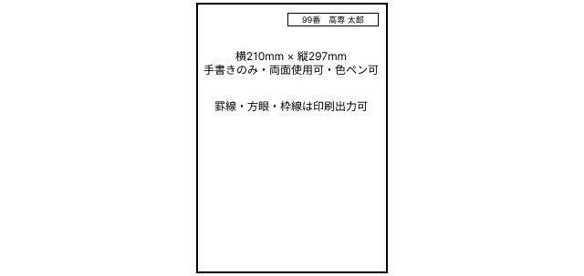
- この講義資料を再読・熟読し「不明な用語」や「理解が不十分な用語」があればインターネットや、ChatGPTなどの生成AIを利用して解決してください。また、興味関心を持ったトピックについて、ウェブ、生成AI、YouTube動画などを利用して知識を広げ、理解を深めてください。
- 特に (プロンプト例) を示しているものについては、実際に生成AIにプロンプトを投げ、さらに対話を重ねることで、知識の幅を広げるだけでなく、理解をより深く確かなものにしてください。